前提条件等
制御(回路・プログラム)に関するお勉強・開発のHomeです。
使用するプログラミング言語は基本的にC言語、C++です。一部、他の言語の知識が混ざる可能性があります。
環境構築等はすでに済んでいるものとして扱い、コードの内容のみになる場合があります。筆者と異なるOS・バージョンを使用する場合はそれぞれの環境に合わせて対応する必要があります。
各開発などのリポジトリは各ページに掲載することもありますが、あくまで参考程度です。
一部に自作のヘッダファイルなどを使用する場合があります。その場合は、そのファイルの中身などを簡単に説明する記事を作成するように心掛けますが、ない場合は中身を見て理解してください。
結局は自分で調べ、データシートなどを確認することがとても大切です。
知りたいことがあれば、調べてみよう。
例えば、「C言語 繰り返し」や「CubeIDE Lチカ F446RE」などで調べるといい感じの記事が出てきます。QiitaやZennなどがその例です。中には個人のサイトで解説をしている方もいます。
データシートはその部品などの名前を検索すると製品ページがあり、そこからデータシートを見れることが多いです。データシートが必要なら、その部品の製品情報を確認するようにしましょう。
ChatGPTなどの生成AIを調べもせずに頼ることはおすすめしません。最初から頼ると意味などの理解が困難になります。
使用環境
- Windows 11 Home ← 推奨
- Ubuntu 22.04 LTS
Macは使用しているソフトウェアが対応していない、機能がないなどの問題点があります。
そのためWindowsを推奨します。その他のOSは自分で対応できる自信のある人のみ使用することをおすすめします。
使用中(使用予定)の機器一覧
- NUCLEO-F446RE(部・私物)
- NUCLEO-F303K8(部)
- Arduino Uno Rev3(部・私物)
- Raspberry Pi Pico(私物)
- DUALSHOCK4(部)
- DUALSHOCK3(部)
- DUALSENSE(私物)
- USB Host Shield 2.0(部・私物)
- (ATOM Matrix)(私物)
- (ESP32-WROVER-E)(私物)
基礎知識
git / GitHub
C言語
C++
回路の基礎
DCモーターの制御
コントローラーのデータ
git / GitHub
導入
-
gitのダウンロードをします。 Download for Windows
基本的にClick here to downloadをクリックし、インストーラーをダウンロードしてください。 -
ダウンロードしたインストーラー
Git-x.xx.x-64-bit.exeをクリックし、インストーラーを起動します。
基本的にNextを選択してください。 -
インストールが完了したら
Git Bashを起動します。
デスクトップのショートカット、あるいは、スタートから起動してください。 -
gitのバージョンを確認し、インストールできていることを確認します。 -
GitHubへの登録をします GitHub
すでにGitHubアカウントがある人は右上のSign inを選択しログインしてください。
アカウントがない人はSign upを選択し、新規作成を行ってください。-
Email: メールアドレスを入力 -
Password: 15文字以上、または、数字と小文字を含む8文字以上。機構本部のパスワード規約に則ってください。 -
Username: ユーザー名を半角英数字で構成します。 -
Your Country/Region: 国と地域はJapanだと思います。 -
Email preferemces: お知らせメールを受け取るかどうかの項目です(自由)。
Create accountで作成完了です。
-
SSHの設定
学内LANなどからサーバーと通信を行うためには、SSHによる認証を使用しなければなりません。
-
SSH鍵を作成します。 -
~/.ssh/に移動します。フォルダがない場合は作成してください。$ ls -a ~ | grep .ssh .ssh/ # ある # ない場合 $ mkdir ~/.ssh $ cd ~/.ssh/ -
すでに
SSH鍵が作られているか確認します。$ ls # なにも表示されない、または、known_hostsのみならok -
ssh-keygen.exeでSSH鍵を作成します。$ ssh-keygen -t rsa -C [email@email.com] -f [id_rsa_username] # email@email.com は GitHub に登録したメールアドレス # id_rsa_username は 出力ファイル名(自由) Generating public/private rsa key pair. Enter passphrase (empty for no passphrase): # SSH鍵のパスワード Enterでパスワードなし Enter same passphrase again: # パスワードの再入力 Enter Your identification has been saved in id_rsa_username Your public key has been saved in id_rsa_username.pub The key fingerprint is: SHA256:------ email@email.com The key's randomart image is: ---ssh鍵が生成されます。- 公開鍵と秘密鍵の両方が生成されていることを確認してください。
$ ls id_rsa_username known_hosts id_rsa_username.pub -
id_rsa_username.pubの内容をコピーします。# (Git Bashの場合) $ cat id_rsa_username.pub | clip # id_rsa_username.pub の中身をクリップボードにコピー -
GitHubにSSH鍵を登録します GitHubアイコン-Settings-Access-SSH and GPG keys-SSH Keysで移動します。New SSH keyを選択してください。
Titleは鍵の名前を設定します。パソコン名や学校名などにしておくとわかりやすいです。
Key typeはAuthentication Keyに設定します。
Keyに先ほどコピーした鍵をペーストしてください。Add SSH keyでSSH鍵を登録します。
-
SSHの設定をします。
~/.ssh/configを開いてください。なければ作成してください。$ ls config # ある # ない場合 $ touch config $ code config -
アカウントと
SSH鍵を紐づける設定をします。Host github.com HostName github.com IdentityFile /C/Users/user_name/.ssh/id_rsa_username User git Port 22 TCPKeepAlive yes IdentitiesOnly yes -
SSHの確認をします。
通信ができるかどうか確認します。$ ssh -T github.com Hi username! You've successfully authenticated, but GitHub does not provide shell access.
gitコマンドの基本
-
clone
リモート(
Gitのサーバー)からリポジトリをローカル(自分の作業環境)に複製します。$ git clone [remote URL] # 実行するディレクトリに注意実行したディレクトリにそのリポジトリが複製されます。
[remote URL]はGitHubから確認できます。
GitHubからcloneしたいリポジトリのページまで移動してください。緑色の<>Codeを押しLocalのCloneのSSHからコピーできます。 -
add
ローカルで変更したファイルなどをリモート反映させるファイルを選択します。
「コミットに含めるファイルを選択する」と同じことです。$ git add [ファイル名1] [ファイル名2] … # ファイル名(フォルダ名)は何個でも書けるはずです。 -
commit
コミットを作成します。
addしたファイルをひとまとまりにします。$ git commit -m "[コミットメッセージ]" # コミットメッセージをつけることができますコミットメッセージには何を更新したのかなどの内容を書いておくとわかりやすいです。
add：ファイルの新規作成や新規追加などupdate：ファイルの中身の更新などfixed、fix：バグの修正などstyle：動作に問題のない部分の修正、インデントの修正などdocs: ドキュメントの編集など
コミットメッセージは日本語でも問題はありません。
-
push
作成したコミットをリモートに反映させます。
$ git push origin main # mainブランチにpushします -
status
更新されたファイルなどがあるか確認します。
$ git status Your branch is up to date with 'origin/main'. Changes not staged for commit: (use "git add/rm <file>..." to update what will be committed) (use "git restore <file>..." to discard changes in working directory) ---現在のリポジトリで更新されたファイルがあるかどうか、確認できます。
-
pull
リモートの変更をローカルに反映させます。
「他の端末などで変更を加え、リモートに反映させた。手元には反映前のコードなどがある。」というときにわざわざディレクトリを削除してもう一度cloneするのは時間がかかります。pullはfetch(変更情報を持ってくる)とmerge(変更を反映させる)を同時に行います。mergeするときにローカルにリモートにはない変更があった場合は、コンフリクトが発生します。発生した場合は、手動でmerge作業を行う必要があります。
branch
普段はおそらくmainブランチ、または、masterブランチを使用していると思います。
ここでは、開発用のブランチmainと更新用(安定版)のブランチreleaseにわけておきたいとします。mainブランチは日々の開発によりたくさんの更新が入りどのコミットでうまくいったのかがわからないこともあります。ブランチはわけずにタグを作成して、そのときのコミットに戻れるという機能もありますが、それはbranchの次に紹介します。
-
ブランチの作成をします。
git branch devedeveという名前のブランチがローカルに作成されました。$ git branch * main deve現在ローカルにあるブランチの一覧を表示できます。
-
checkout
ブランチを作成したらそのブランチに移動します。
git checkout [ブランチ名] -
push
あとは変更したファイルを
addしたりcommitしたりしても問題はありません。$ git push origin [ブランチ名] # origin で指定しないとpushできないことが多いです -
merge
mainブランチだけ先に進み、deveブランチが遅れている場合、deveブランチにmainブランチの状態にしたいなどということがあると思います。
そんなときに、いちいちmainブランチからdeveブランチにコピペするのは時間の無駄です。mergeを使用します。
進めたいブランチにcheckoutし、mergeを実行します。git merge [進んでいるブランチ名] -
ブランチの削除
ブランチが不必要になった場合に削除できます。
git branch -d [ブランチ名]ローカルのブランチが削除されます。
git push origin --delete [ブランチ名]リモートのブランチが削除されます。
-
確認
ローカルにあるブランチを確認ができます。
git branchリモートにあるブランチを確認できます。
git branch -r
tag
特定のバージョンに戻りたい(リリースバージョンとか)というときにリリースを作成するという事もできます。しかし、検索などに引っかかってしまう可能性があります。それが嫌だという場合はtagを作成し、そのタグに戻るという行為をします。
-
tagの作成とpush
タグを作成する前に変更などはすべてリモートに反映させておきましょう。
git tag -a [タグ名] -m "[タグのメッセージ]"これでローカルに
tagを作成します。ローカルのcommitにtagがつけられます(たぶん)。git push origin [タグ名]これにより、タグを作成し、作成したタグをリモートに反映することができます。
-
tagの確認
git tagローカルにあるタグを確認できます。
-
tagの削除
ローカルにあるタグを削除します。
git tag -d [タグ名]リモートにあるタグを削除します。
git push origin --delete [タグ名]
C言語
機械(コンピューターなど)にさせる処理を記述する言語です。人と人間をつなぐ言語です。
プログラミング言語には様々な種類があります。
また、プログラミング言語で記述されたものをプログラムと言います。
英語で記述されたものを英文と言うのと同じです。
数多のプログラミング言語の中でも有名かつ古くから利用されているプログラミング言語の1つです。
システムの記述を目的として開発され、人間にも理解しやすい仕様で、コンピューターを直接操作するような特徴を併せ持ちます。
実行するためにはコンパイルとリンク(ソースコードを機械語に変換)が必要になります。
ウォーターフォールモデルに則って作成することをおすすめします。
- 内容の整理
- プログラムの設計
- プログラムの作成
- コンパイル・リンク
- 実行
- 評価
- 完成
順番に行っていき、問題が発生したら問題の箇所に戻り、再度手順通りに作成を行います。
C言語(基礎編)
C言語の基本構成
C言語のプログラムは関数が1つ以上集まって構成されます。プログラムを実行するためにはmain関数が必須であり、main関数はプログラムの実行時に一番最初に実行される関数です。
それぞれの関数は1つ以上の文から構成され、引数(ひきすう)と戻り値の型を持ちます。
文は;(セミコロン)で区切られ、改行などでは区切られません。
世界でも最も有名と言われているサンプルプログラムHello,World!を例に説明します。
#include <stdio.h>
int main(void){
printf("Hello,World!\n");
return 0;
}
-
#include <stdio.h>- あらかじめ用意されている標準入出力関数をプログラムで利用するために読み込むための命令です。
- プログラムに組み込むファイル名を
<>で囲むとシステムで用意されているファイルを、""で囲むとユーザーが用意したファイルを読み込むことができます。
-
int main(void){- 実行するために必要なmain関数の宣言・定義です。この場合は、関数の戻り値の型はint(整数型)で、引数はな空(void)であることを示しています。
型と引数については、後で説明します。現段階では存在を覚えてください。 -
printf("Hello,World!\n");- 標準出力(基本はターミナルの画面)に
""(ダブルクォーテーション)で囲まれた文字列を出力する関数です。 stdio.hで定義されています。
- 標準出力(基本はターミナルの画面)に
-
return 0;- 関数の戻り値を0とし、関数の終了を意味します。ほとんどのシステムではmain関数の戻り値0は正常終了を意味します。
-
}- 関数の終わりを意味します。main関数宣言部の括弧と中身を挟んでmain関数の範囲を表現しています。
C言語は、関数の中身は上の文から順番に実行されます。return文を実行すると、関数が終了するため、関数内のその後の文は実行されません。
int main(void){
printf("Hello"); // 実行される
printf("World"); // 実行される
return 0; // 実行される
printf("!\n"); // 実行されない
}
コメント
ソースコードの中で、動作には影響しない注釈をつけることができます。その注釈のことを指します。
C言語では//(スラッシュ2つ)と/* */による2つの記述方法があります。
//はこれ以降のその行をコメントとします。
/* */は/*と*/で囲まれた最小区間をすべてコメントとします。こちらは改行が含まれていても問題ありません。
// ここはコメントです。
ここはコメントではありません。 // しかし、ここはコメントです。
/* ここはコメントです。
ここもコメントです。
/* ここもコメントです。 */ ここはコメントではありません。
*/ ここもコメントではありません。
// ここはコメントです。
データ型と変数
変数や関数の戻り値など、データの格納や受け渡しのときのデータの種類を決める型のことです。
主なデータ型を紹介します。
- 文字(1文字)型：
char - 整数型：
char、short、int、longなど - 実数型：
float、double - 空：
void
文字型は、ASCIIコードの文字を扱えます。半角英数字・半角記号と認識しておいても問題ありません。
整数型は、最上位ビットを符号部とし格納します。
実数型は、浮動小数点方式(IEEE 754)で格納します。
変数はデータ型と変数名を持ちます。変数名にはアルファベットとアンダースコア(アンダーバー)、数字を使用できます。しかし、変数名の先頭に数字を使用することはできません。
また、同じ変数名をスコープ内に複数置くことはできません。
スコープについては後で話します。
型 変数名;
int x;
同じ型の変数を複数宣言する場合は、,(カンマ)で区切って並べることができます。
int x_1, x_2;
char c_1, c_2;
変数に値を代入する場合は、=(イコール)を使用します。
x = 11; // int x;
c = 's'; // char c;
y = x; // int y; 変数yに変数xの値を代入する
左辺の変数に右辺の値を格納します。値を代入する場合は値と変数の型を一致させる必要があります。
C言語では、文字と文字列と数値は異なります。
文字を表現するためには、文字を''(シングルクォーテーション)で囲います。
文字列を表現するためには、文字を""(ダブルクォーテーション)で囲います。
数値を表現するためには、数字をそのまま記述します。
'c' // 「c」という文字(1文字)
"abc" // 「abc」という文字列
30 // 「30」という数値
演算子
数値や変数などを使用して、算術計算を行うときに使用します。
+：加算-：減算*：乗算/：除算%：剰余算
計算結果の変数などへの代入は、値の代入と同じ方法です。計算結果のデータ型は、整数型同士の演算は整数型になり、それ以外の組み合わせの演算では実数型になります。
演算順序は数学と同じで括弧→乗除→加減です。
a + b
a - b
a * b
a / b
a % b // 整数型のみ
数学では、先に優先したい演算を様々な括弧(()、{}、[])で囲います。
C言語では演算の括弧はすべて()で囲い、次の式のような記述になります。
s = ((x_1 + x_2) - (y_1 + y_2)) * 2;
数値や変数などを使用して、論理計算を行うときに使用します。
論理演算には種類があり、ビット単位での演算と変数や数値単位での演算の2つがあります。
ビット単位の演算
&：論理積(AND)|：論理和(OR)^：排他的論理和(XOR)~：否定(NOT)
a & b
a | b
a ^ b
~a
変数や数値単位での演算
C言語では、ビット単位ではなく変数や数値に対して論理演算を行う場合は、0を偽(false)、それ以外を真(true)として扱います。
&&：論理積(AND)||：論理和(OR)!：否定(NOT)
a && b
a || b
!a
変数や数値の大小関係を調べるときに使用します。演算結果は式が成り立つ場合は1(true)、成り立たない場合は0(false)を得ることができます。
| 数学表現 | ｃ言語表現 |
|---|---|
| = | == |
| < | < |
| > | > |
| ≦ | <= |
| ≧ | >= |
| ≠ | != |
特に、数学表現の=(イコール)はC言語では代入を意味するため間違えないよう注意してください。
変数の値を1増減する演算子です。
++：増分(インクリメント)--：減分(デクリメント)
前置増減(++a、--b)と後置増減(a++、b--)の2種類があります。
前置増減は変数の値を増減した後に、変数の値を使用します。反対に、後置増減が変数の値を使用した後に、変数の値を増減します。
変数や数値を2進数表記で左右にビットシフトします。シフトして空いたビットは0で埋められます(シフトする値が負の場合は0ではなく1で埋められる場合があります)。
>>：右シフト<<：左シフト
変数に値を代入するときに、他の演算を同時に行うことができます。
=：単純代入：a = b+=：加算代入：a += bはa = a + bと同じ-=：減算代入：a -= bはa = a - bと同じ*=：乗算代入：a *= bはa = a * bと同じ/=：除算代入：a /= bはa = a / bと同じ%=：剰余代入：a %= bはa = a % bと同じ<<=：左シフト代入：a <<= bはa = a << bと同じ>>=：右シフト代入：a >> = bはa = a >> bと同じ&=：ビット論理積代入：a &= bはa = a & bと同じ|=：ビット論理和代入：a |= bはa = a | bと同じ^=：ビット排他的論理和代入：a ^= bはa = a^+ bと同じ
演算子には優先順位があります。ここでは紹介しませんが、もしいろいろな演算子を式中に使用していて、思ったとおりに動作しない場合は調べてみてください。
()をつけるとそこが優先して演算されます。
整数を文中にそのままの数値を記述すると、それは10進数と解釈されます。C言語では2進数、16進数といった他の基数表現でも数値を記述することができます。
2進数は、数値の先頭に0bを、16進数は、数値の先頭に0xをつけます。
int x_10 = 16; // 10進数の16
int x_2 = 0b1010; // 2進数の1010。10進数では10
int x_16 = 0x20; // 16進数の20。10進数では32
標準入出力関数
ターミナルの画面に文字や数値を出力するときはprintf()を使用します。
printf("書式文字列", 引数1, 引数2, ...);
書式文字列は出力する書式を指定します。
printf("Hello,World!\n");
int x = 3;
printf("%d\n", x);
%dは出力変換指定子・フォーマット指定子と呼びます。一部を紹介します。
| 記号 | 対応する型 |
|---|---|
| %d | 整数 |
| %f | 実数 |
| %c | 文字 |
他にもたくさんあります。必要に応じて調べてみてください。
フォーマット指定子と文字列を組み合わせることで数値と文字列を同時に出力することができます。
int score = 59;
float rate = 60.0f;
printf("得点は%d点です。\n", score);
printf("合格する確率は%.1f%%です。\n", rate);
%という文字を出力したい場合は%%で出力できます。
ターミナルの画面から文字や数値を入力するときはscanf()を使用します。
scanf("書式文字列", 引数1, 引数2, ...);
入力変換指定子は入力する書式を指定します。書式指定子は出力の場合と基本同じですが、double型の場合は%fではなく%lfになることに注意してください。
char c;
scanf("%c", &c);
int x;
scanf("%d", &x);
float f;
double d;
scanf("%f %lf", &f, &d);
出力するときは、書式文字列に\n(改行文字)を含めていましたが、入力のときには含めないようにしてください。
変数に値を代入するときは変数の実体を引数に渡すのではなく、変数のポインタを渡すようにしましょう。
条件分岐
「もし 〇〇 ならば これを実行する。」を表現する文です。指定した条件をが真か偽かを判定し、処理を2つに分岐されることができます。「〇〇」の部分が条件式になります。
if(条件式){
条件が真の場合の処理;
}
「もし 〇〇 ならば これを実行する。そうでなければ これを実行する。」を表現するためにはif-else文を使用します。
if(条件式){
条件が真の場合の処理;
}else{
条件が偽の場合の処理;
}
「もし 条件式1 ならば 処理1、そうでなければ もし 条件式2 ならば 処理2、そうでなければ 処理3」という分岐をする場合は以下のコードのように記述します。
if(条件式1){
処理1;
}else if(条件式2){
処理2;
}else {
処理3;
}
変数の値によって処理を変更する例を示します。
if(x > 0){
printf("xは正です。\n");
}else if(x < 0){
printf("xは負です。\n");
}else{
printf("xは0です。\n");
}
制御式の値によって処理を分岐させるときに使用します。
「もし 制御式 が 0 なら 処理1、もし 制御式 が 1 なら 処理2、...」といった処理をする場合に使用することが多いです。
switch(制御式){
case 事項式1:
文1;
文2;
break;
case 事項式2:
文3;
文4;
break;
default:
文5;
}
制御式は整数として解釈され、break文でswitch文から抜けることができます。break文がない場合は次の事項式の判定などに処理が続きます。
変数の値によって処理を変更する例を示します。
switch(z){
case 0:
printf("zは0です。\n");
break;
case 2:
case 3:
case 5:
case 7:
printf("zは素数である数字です。\n");
break;
default:
printf("zはその他の数です。\n");
}
繰り返し
回数が決まっている繰り返し処理を行いたいときによく利用される文です。
for文は次の構成になっています。
for(初期設定式; 継続条件式; 再設定式){
処理;
}
- 初期設定式
- 繰り返し開始前に1回だけ実行される式です。
- 主に制御変数の初期化をするために使用します。
- 継続条件式
- この式が真の間、処理が繰り返されます。
- 再設定式
- 処理を1回行った後に実行される式です。毎回の繰り返し終了時に実行されます。
- 主に制御変数の値を変更するために使用します。
繰り返しの回数を表示する例を示します。
for(int i = 0; i < 10; i++){ // 0~9までの10回繰り返される
printf("%2d回目です。\n", i);
}
九九の表を表示する例を示します。
for(int i = 1; i <= 9; i++){
for(int j = 1; j <= 9; j++){
printf("| %2d ", i * j);
}
printf("|\n");
}
回数が決まっていない繰り返し処理を行いたいときによく利用される文です。
while文は次の構成になっています。
while(継続条件式){
処理;
}
継続条件式が真の間、処理を繰り返します。
処理を行う前に条件の判断を行うwhile文に対して、処理を行った後に条件の判断を行うdo-while文があります。
do-while文は次の構成になっています。
do{
処理;
}while(継続条件式);
上のwhile文の例をdo-while文で書き直すと次のようになります。
do{
scanf("%d", &x);
}while(x >= 0);
C言語(発展編)
配列
配列の宣言は、変数と同じように行います。宣言時に配列の大きさを指定する必要があります。
int d[10];
float f[4];
配列dはd[0]~d[9]まで、配列fはf[0]~[3]の変数が宣言されます。配列番号(定数式)は0から始まるため、0~n-1までのn個になります。
配列へのアクセスは変数と同じです。しかし、要素番号を指定する必要があります。要素番号は整数であれば変数や式も使用できます。
x = 11; // int x;
y[0] = x; // int y[3]; 配列y[0]に変数xの値を代入する
for(int i = 0; i < 8; i++){
data[i] = 0; // int data[8];
}
平面や立体、それ以上の次元をイメージして配列を扱いたいときに利用します。
int data[2][3];
/*
0 1 2
0 | | | |
1 | | | |
*/
配列は[x][y]ではなく[y][x]となるため、注意が必要です。
data[z][y][x];、data[y][x];
定数式を増やすことで多次元配列を宣言することができます。
ポインタ
オブジェクト(変数など)や関数のアドレス(メモリの番号・住所)を保持するデータ型のことです。ポインタを使用することによって、それが指し示すアドレスのデータを参照することができます。
変数名の前に&(アンパサンド)をつけることで変数のアドレスを取得できます。
標準入力のときに、関数の引数に変数に
&をつけて渡していたのは、変数のポインタを渡していたのです。
ポインタを格納する変数のことです。データ型は既存のものを使用します。変数名の先頭に*(アスタリスク)をつけることで宣言することができます。
int *d_p; // int型のポインタ
float *f_p; // float型のポインタ
ポインタ変数を宣言しただけでは、変数の領域は確保されないので注意が必要です。
ポインタ変数に使用できる演算子が2つあります。
- アドレス演算子
&(アンパサンド)- 変数のポインタを取得するための演算子です。
- ポインタ変数を介してデータを参照するために、オブジェクトのアドレス値を取得します。
- 間接参照演算子
*(アスタリスク)- ポインタ変数が指し示すデータを参照するときに使用する演算子です。
- ポインタ変数から実態のデータを参照するために使用します。
int *d_p; // ポインタ変数
int d; // 通常の変数
d_p = &d; // dのアドレスをd_pに代入
d = 5; // dの値を変更
printf("%d\n", *d_p); // d_pが指す変数の値(5)を表示
*d_p = 10; // d_pが指す変数の値を変更
printf("%d\n, d); // dの値(10)を表示
- NULLポインタ(
NULL)- どこも指し示さないポインタを意味します。
- ポインタを返す関数のエラー戻り値としても使用されます。
- 汎用ポインタ(
void *)- すべての型へのポインタを指し示すもののことです。
- そのポインタが指し示すデータ型が定まらないときに使用されます。
- ポインタへのポインタ
- ポインタ型を示すポインタのことです。
**をつけて宣言します。
構造体
違う型の変数を複数個まとめて扱えるもののことです。
| 学年 | クラス | 番号 | 氏名 | 国語 | 数学 | 英語 |
|---|---|---|---|---|---|---|
| 1 | 3 | 33 | タカシ | 68 | 58 | 90 |
| 1 | 2 | 10 | アヤカ | 92 | 79 | 94 |
| : | : | : | : | : | : | : |
異なるデータ型のデータを1つのまとまりとして扱いたいときに使用します。
構造体の宣言にはstructを使用します。
struct 構造体名{
構成する変数の宣言;
変数型 変数名;
};
struct student{
int grade;
int group;
int num;
int score_japanese;
int score_math;
int score_english;
};
構造体を構成する要素(変数など)をメンバと呼びます。
構造体を使用するためには、構造体変数を宣言する必要があります。
struct 構造体名 構造体変数名;
struct student data;
通常の変数のように、構造体でも配列を作ることができます。構造体配列と呼びます。
struct student data[40];
構造体変数に使用できる演算子が2つあります。
- メンバ参照演算子
.(ピリオド)- 構造体のメンバを参照するための演算子です。
- メンバを通常の変数のように使用できます。
- 構造体変数に対して使用します。
- メンバ間接参照演算子
->(ハイフンと大なり)- 構造体のメンバをポインタを用いて参照するための演算子です。
- 構造体変数のポインタに対して使用します。
- アロー演算子とも呼ばれます。
struct student d, *d_p;
struct student data[40];
d.score_math = 90;
d_p = &d;
d_p->score_japanese = 80;
data[2].grade = 1;
data[2].group = 3;
printf("%d %d %d %d\n"
, d_p->score_math, d.score_japanese, data[2].grade, data[2].group);
構造体そのものの一括代入や関数の戻り値や引数に構造体を使用することができます。
関数での使用方法は後で説明します。
struct student a, b;
a = b; // 構造体aにbのデータをすべて代入
// これと同じ
a.grade = b.grade;
a.group = b.group; // 略...
変数の有効範囲
プログラムで使用するメモリ領域はプログラム領域とデータ領域に分けられ、データ領域は、静的領域、スタック領域、ヒープ領域に分けられます。
変数や関数は、宣言方法によって使用するメモリ領域を選択することができます。
静的領域に割り当てる場合、宣言時にstaticを指定します。そのオブジェクト(変数や関数など)は静的記憶域期間をもち、生存期間はプログラムの開始から終了までです。
staticを指定しないと自動でautoとなります。autoでは自動記憶域期間をもち、生存期間は宣言時からプログラムの実行がスコープを出るまでです。スタック領域に割り当てられます。
static uint8_t x; // 静的領域
auto uint8_t y; // スタック領域
uint8_t z; // スタック領域
他の変数型などでも同様に割り当てられます。
宣言された場所や使用できる範囲で変数の呼び方が変わります。
関数の外で宣言された変数を外部変数、関数の中で宣言された変数を内部変数と呼びます。
外部変数は静的領域に置かれ、生存期間はプログラムの開始から終了までです。内部変数はスタック領域に置かれ、生存期間は宣言時からプログラムの実行がスコープを出るまでです。
他のプログラムやファイル、関数からでも使用できる変数をグローバル変数(広域変数、大域変数)、宣言した関数内、あるいはさらに狭い範囲で使用できる変数をローカル変数(局所変数)と呼びます。
int x; // 外部変数 グローバル変数
int main(void){
int d; // 内部変数 ローカル変数
return 0;
}
内部変数や外部変数の宣言時にstaticを指定すると挙動が変化します。
内部変数の場合はプログラム開始時に静的領域に置かれ、生存期間はプログラムの開始から終了までです。ただし、関数外からの参照はできなくなります。
外部変数の場合は他のプログラムやファイルからは参照できなくなり、同じファイル内の関数からのみ使用できるようになります。
関数
関数は型と戻り値を持ちます。
一番初めに書いた関数の基本構成に少し情報を付け足します。
記憶域クラス 型 関数名(引数リスト){
文;
return 戻り値;
}
- 記憶域クラス
staticやauto(省略可)を指定します。
- 型
- 関数の戻り値の型を指定します。
- 戻り値がない場合は
voidを指定します。
- 関数名
- 関数名は変数名と同じルールで名前を指定します。
- 引数リスト
- データの受け渡しに使用する変数を
,(カンマ)で区切って記述します。 - 引数がない場合は空(void)を指定します。
- データの受け渡しに使用する変数を
int add(int a, int b);
int main(void){
int x, y, z;
scanf(" %d%d", &x, &y);
z = add(x, y);
printf("%d+%d=%d\n", x, y, z);
return 0;
}
int add(int a, int b){
int ans;
ans = a + b;
return ans;
}
関数を呼び出すときに関数に引数としてデータを渡すことができます。C言語では引数によるデータの渡し方には2種類あります。
- 値渡し
- 値をコピーして関数に渡す方法です。
add_by_value()のa、bの値をadd_by_value()で代入などで変更しても、呼び出し側のx、yの値は変更されません。
- 参照渡し
- 変数のポインタを渡す方法です。
add_by_reference()のansの値を変更すると、呼び出し側のzの値が変更されます。zはポインタを渡すために&をつけて渡しています。
int add_by_value(int a, int b);
int add_by_reference(int a, int b, int *ans);
int main(void){
int x, y, z;
scanf(" %d%d", &x, &y);
z = add_by_value(x, y);
printf("%d+%d=%d\n", x, y, z);
scanf(" %d%d", &x, &y);
add_by_reference(x, y, &z);
printf("%d+%d=%d\n", x, y, z);
return 0;
}
int add_by_value(int a, int b){
return a + b;
}
void add_by_reference(int a, int b, int *ans){
ans = a + b;
return;
}
他の人が作成した関数などを使用したい場合は、関数などが含まれているヘッダファイルを読み込むことで使用できます。
今まで#include <stdio.h>などと記述していましたが、これはstdio.hというヘッダファイルを読み込む処理をしていました。
数学の基本的な計算が含まれているライブラリです。
平方根(sqrt)、三角関数(sin、cos、tan)、逆三角関数(asin、acos、atan、atan2)、累乗(pow)などがあります。また、円周率はM_PIと定義されています。
root2 = sqrt(2); // √2
r_cos = r * cos(theta);
r_sin = r * sin(theta);
- プログラミング授業資料
- 苦しんで覚えるＣ言語
C++
「もの」を考えるプログラミング言語の考え方です。
例えば、「車」というオブジェクトには、「燃料」、「タイヤの回転数」、「乗車人数」などの変数や「走る」、「止まる」、「窓を開ける」などの動作を表す機能があります。
また、「走る」、「止まる」などの操作をするために内部でどんなことが行われているか知る必要はありません。「走る」、「止まる」ためにはどんな操作を行えばいいのかがわかっていれば内部の仕組みに関係なく、使用することができます。
複数の車がある場合、持つべき変数、動作は同じですがそれぞれで変数の値などは異なります。変数の値などが異なるだけなら、構造体を作成し、一つ一つの車をそれぞれの構造体に対応させれば問題はありません。しかし、動きなどはすべて同じなため、それぞれの車に対して定義するのは無駄です。
そこで、一つの変数、動きをまとめ大量生産できるようにした型のことをクラスと呼びます。
C言語の構造体に変数だけでなく、関数も追加したようなものがクラスです。
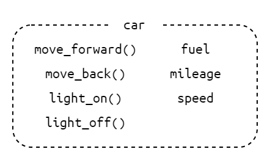
この例では、carというクラスの中にmove_forward()というメソッドや、fuelというメンバ変数が存在します。
オブジェクトはそれぞれの車を表すときに用いられる考え方で「インスタンス」とも呼びます。
車の設計書がクラスで、実際につくる車が「インスタンス」という考え方で、問題はないと思います。
C言語の構造体で言えば、構造体変数に当たるものと同じです。
変数や関数、クラスの名前が重複しにくいように作成された空間のことです。違う名前空間なら同じ名前の変数などが複数存在しても問題ありません。しかし、同じ名前空間内ではもちろん同じ名前は使用できません。
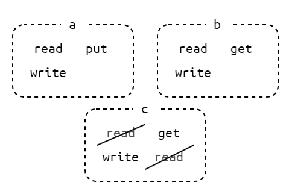
この例ではa、b、cの3つの名前空間があります。
名前空間が異なるためreadやwriteなどがそれぞれの名前空間で存在しています。しかし、名前空間cでは、同じ名前空間内なのでreadという名前は複数宣言できません。
クラスを使用する例を紹介します。クラスの作成や名前空間の定義は一旦飛ばします。
#include "car.hpp"
int main(void){
car car1; // インスタンスを作成
car1.move_forward(); // メソッドを呼び出し
car1.light_on();
return 0;
}
インスタンスを宣言する場合は変数などと同じように宣言します。car1というインスタンスが作成されます。
メソッドや変数にアクセスするためには、構造体と同じように.(ピリオド)を使用します。
名前空間を使用する例を紹介します。
#include <iostream>
using namespace std;
int main(void){
cout << "Hello, World!" << endl;
return 0;
}
Hello, World!"を表示するプログラムの例です。stdという名前空間にあるcoutとendlというものを使用しています。stdという名前空間を使用する前にusing namespace std;でstdを使用するという宣言をしています。
#include <iostream>
int main(void){
std::cout << "Hello, World!" << std::endl;
return 0;
}
また、名前空間の使用を宣言せずにstd::coutのように名前空間にあるものを使用する際に一つ一つに名前空間名::をつけることでその名前空間に定義されているものを使用することができます。
インスタンスを宣言するときに引数を渡すことができます。引数を渡すときに呼び出すメソッドをコンストラクタと言います。
コンストラクタは主に、宣言時に初期化したいものの値などを渡してあげます。
#include "car.hpp"
int main(void){
car car1(100);
}
このように引数を渡すことができます。この例では、燃料の初期値として100を渡しています。渡す引数はそれぞれのクラスで異なるため、クラスを使用する場合には宣言方法をしっかりと確認する必要があります。
回路の基礎
基本物理量
電荷(電気を帯びた粒子)が流れ動くことを電流が流れると言います。電流は流れる向きと大きさを持ちます。
電流は \(I\) で表され、単位は \(\mathrm{[A]}\) (アンペア)です。
電流が流れる路を電気回路と言います。
電荷を移動させる力のことを電圧と言います。電位(ある点の電気的な高さ(エネルギー))の差を電位差と言い、電気回路では電圧とも言います。
電圧は \(V\) で表され、単位は \(\mathrm{[V]}\) (ボルト)です。
電流は電位の高い方から低い方に向かって流れます。

電流の流れにくさを表します。回路内に抵抗があることでエネルギーが消費され、電圧が下がります。これを電圧降下と言います。
抵抗は \(R\) で表され、単位は \(\mathrm{[\Omega]}\) (オーム)です。
SI接頭語
大きな数字や小さな数字をわかりやすく表すために、10のべき乗を表し桁数を少なくします。
電気回路で使用するSI接頭語の一部を紹介します。電気回路では\(10^{3}\)ごとのSI接頭語を使用します。
| 記号 | 接頭語 | \(10^{n}\) |
|---|---|---|
| \(T\) | テラ | \(10^{12}\) |
| \(G\) | ギラ | \(10^{9}\) |
| \(M\) | メガ | \(10^{6}\) |
| \(k\) | キロ | \(10^{3}\) |
| \(m\) | ミリ | \(10^{-3}\) |
| \(\mu\) | マイクロ | \(10^{-6}\) |
| \(n\) | ナノ | \(10^{-9}\) |
| \(p\) | ピコ | \(10^{-12}\) |
オームの法則
抵抗\(R\)、電圧\(V\)、電流\(I\)の関係は次のように表せます。
$$ V = RI $$
次の回路では何\(\mathrm{[A]}\)の電流が流れるでしょうか。
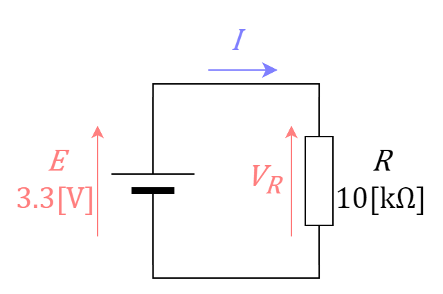
オームの法則で求めます。
$$ V=RI \\
I = \frac{V}{R} = \frac{3.3 \mathrm{[V]}}{10 \times 10^{3} \mathrm{[\Omega]}} = 0.33 \times 10^{-3}\mathrm{[A]} = 0.33\mathrm{[mA]} $$
抵抗\(R\)の両端には電源である\(E\)がすべて印加されます。そのため、\(R\)に印加される電圧は\(3.3\mathrm{[V]}\)となります。
直列回路と並列回路
素子(抵抗など)の端子同士を一直線上に並ぶように接続する方法です。図として表すと次のようになります。
直列接続の場合は電圧と電流は次のようになります。

$$ E = V_{1} + V_{2} \\ I = I_{1} = I_{2} $$
素子の端子同士を両端接続する方法です。図として表すと次のようになります。
並列接続の場合は電圧と電流は次のようになります。

$$ E = V_{1} = V_{2} \\ I = I_{1} + I_{2} $$
合成抵抗
抵抗が複数ある場合は全体の抵抗はどうなるでしょうか。
全体の抵抗を1つの抵抗としてまとめて考えた抵抗を合成抵抗と言います。
直列接続の合成抵抗は次の式で求められます。
$$ R = R_{1} + R_{2} $$
次の回路の合成抵抗を求めます。
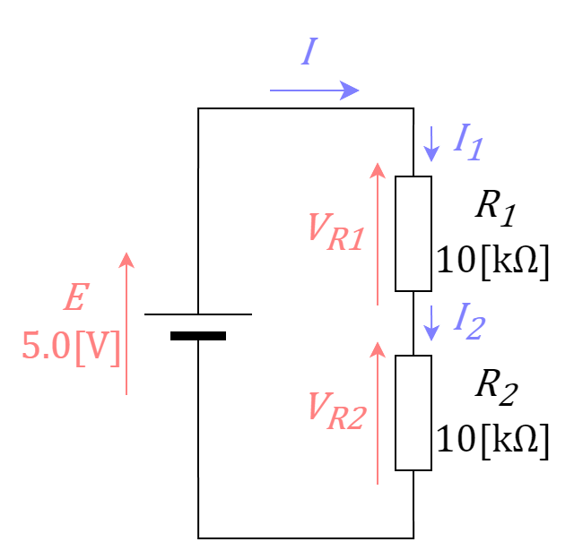
$$ R = R_{1} + R_{2} = 10 \times 10^{3} + 10 \times 10^{3} = 20 \times 10^{3} = 20\mathrm{[k\Omega]} $$
次の回路の合成抵抗を求めます。

$$ R = R_{1} + R_{2} = 5 \times 10^{3} + 10 \times 10^{3} = 15 \times 10^{3} = 15\mathrm{[k\Omega]} $$
直列接続の場合は合成抵抗は大きくなります。
並列接続の合成抵抗は次の式で求められます。 $$ R = \frac{1}{\frac{1}{R_{1}} + \frac{1}{R_{2}}} $$ 抵抗が2本の場合は上の式を変形して次の式で表すこともあります。 $$ R = \frac{R_{1}R_{2}}{R_{1} + R_{2}} $$ この式を「和分の積」と呼ぶ人もいます。
次の回路の合成抵抗を求めます。

$$ R = \frac{1}{\frac{1}{R_{1}} + \frac{1}{R_{2}}} = \frac{1}{\frac{1}{10 \times 10^{3}} + \frac{1}{10 \times 10^{3}}} = 5 \times 10^{3} = 5\mathrm{[k\Omega]} $$
次の回路の合成抵抗を求めます。「和分の積」で求めてみます。

$$ R = \frac{R_{1}R_{2}}{R_{1} + R_{2}} = \frac{5 \times 10^{3} \times 10 \times 10^{3}}{5 \times 10^{3} + 10 \times 10^{3}} = 3.33\ldots \times 10^{3} \fallingdotseq 3.3\mathrm{[k\Omega]} $$
並列接続の場合は合成抵抗は小さくなります。
分圧
直列接続の場合は全体の電圧が\(V = V_{1} + V_{2}\)で表されます。
\(V_{1}\)、\(V_{2}\)を次の式で表します。\(V\)は全体に加わる電圧、\(R\)は合成抵抗です。
$$ V_{1} = \frac{R_{1}}{R}V \\
V_{2} = \frac{R_{2}}{R}V $$
次の回路のそれぞれの抵抗に加わる電圧を求めます。
$$ V_{1} = \frac{R_{1}}{R}E = \frac{10 \times 10^{3}}{20 \times 10^{3}} \times 5.0 = 2.5\mathrm{[V]} \\ V_{2} = \frac{R_{2}}{R}E = \frac{10 \times 10^{3}}{20 \times 10^{3}} \times 5.0 = 2.5\mathrm{[V]} $$
次の回路のそれぞれの抵抗に加わる電圧を求めます。
$$ V_{1} = \frac{R_{1}}{R}E = \frac{5 \times 10^{3}}{15 \times 10^{3}} \times 5.0 = 1.66\ldots \fallingdotseq 1.7\mathrm{[V]} \\ V_{2} = \frac{R_{2}}{R}E = \frac{10 \times 10^{3}}{15 \times 10^{3}} \times 5.0 = 3.33\ldots \fallingdotseq 3.3\mathrm{[V]} $$
抵抗が大きい方に電圧が多く加わります。
分流
並列接続の場合は全体の電流が\(I = I_{1} + I_{2}\)で表されます。
\(I_{1}\)、\(I_{2}\)を次の式で表します。\(I\)は全体に流れる電流、\(R\)は合成抵抗です。
$$ I_{1} = \frac{R}{R_{1}}I = \frac{R_{2}}{R_{1} + R_{2}}I \\
I_{2} = \frac{R}{R_{2}}I = \frac{R_{1}}{R_{1} + R_{2}}I $$
次の回路のそれぞれの抵抗に流れる電流を求めます。まずは全電流\(I\)をオームの法則で求めます。
$$ I = \frac{E}{R} = \frac{5.0}{5 \times 10^{3}} = 1 \times 10^{-3} = 1\mathrm{[mA]} \\ I_{1} = \frac{R}{R_{1}}I = \frac{5 \times 10^{3}}{10 \times 10^{3}} \times 1 \times 10^{-3} = 0.5 \times 10^{-3} = 0.5\mathrm{[mA]} \\ I_{2} = \frac{R_{1}}{R_{1} + R_{2}}I = \frac{10 \times 10^{3}}{10 \times 10^{3} + 10 \times 10^{3}} \times 1 \times 10^{-3} \\ = 0.5 \times 10^{-3} = 0.5\mathrm{[mA]} $$
次の回路のそれぞれの抵抗に流れる電流を求めます。それぞれの抵抗値と加わる電圧が分かればオームの法則でも求めることができます。
$$ I_{1} = \frac{V_{R1}}{R_{1}} = \frac{5.0}{5 \times 10^{3}} = 1\mathrm{[mA]} \\ I_{2} = \frac{V_{R2}}{R_{2}} = \frac{5.0}{10 \times 10^{3}} = 0.5\mathrm{[mA]} $$
抵抗が小さい方に電流が多く流れます。
短絡と開放
短絡は\(R=0\)であることです。
抵抗がないため\(V=RI=0\)になります。このとき\(I\neq0\)になります。
開放は\(R=\infty\)であることです。
抵抗が無限大のため\(I=\frac{V}{R}=0\)になります。このとき\(V\neq0\)になります。
DCモーターの制御
制御用回路
回路的には以下のようになっています。

モタドラICの動作電圧が12Vでマイコンからの信号の電圧が5Vか3.3Vなので電圧を上げる必要があります。それをフォトカプラで信号のやり取りを行っています。
また、PWMの周期を83[μs]に設定します(宗派)。フォトカプラが変換に対応する周波数によって決まっています。
PWM
Pulse Width Modulationの略でパルス幅変調といいます。
一定周期の中で出力がHIGHの時間とLOWの時間の比(デューティー比)で中間の電圧を擬似的に表現します。
PWMの出力波形は以下の図のようなものです。

GPIOピンの出力が5Vでデューティー比が25%であれば、出力は1.25Vになります。出力電圧は以下の式で求められます。
$$ 出力電圧 = {最大電圧} \times {デューティー比} $$
デューティー比が小さいと素子によってはデューティー比0％とあまり変わらない結果が得られるものもあります。各素子の動作電圧などを確認してください。
出力の決定
モーターへの出力はDigitalとPWMの2つで決まり、DigitalとPWMの差が出力になります。図示すると以下のようになります。

Digitalの値がモーターの回転方向に対応し、PWMのデューティー比がモーターの回転速度(印加電圧)と対応します。
コントローラーのデータ
通信モジュール
双葉電子のFEP02を使用しています。
920MHz帯の無線モジュールです。UART(シリアル通信)でデータの送受信を行っています。Baudrateは38400bpsの設定になっているものが多いです。
送信側
使用機器
Arduino Uno R3USB Host Shield 2.0FEP- コントローラー
DUALSHOCK4など
以下の図のように接続します。

受信側
使用機器
- マイコン
STM32F446RET6やSTM32F303K8T6など FEP
以下の図のように接続します。

送受信するデータ
DUALSHOCK4の場合

DUALSHOCK3の場合

DUALSENSEの場合

データ型はすべてuint8_tで、合計13Byteのデータになっています。
header : 0xaf 先頭データを意味します。
SUM : データ確認用のSUMです。 1~8Byteの合計値になっています。
footer : 0xed 終端データを意味します。
PlatformIO
環境構築
プロジェクトの基本操作
環境構築
vscode(Visual Studio Code)の拡張機能の一つです。マイコンへのプログラム作成やプログラムのビルド、マイコンへの書き込みなど、基本的なことが一つでできるようになる拡張機能です。
さまざまなフレームワーク(環境)に対応した拡張機能で、いろいろなマイコンへのプログラムをこの拡張機能だけで対応できます。
OSにあまり依存しないため、誰でも気軽に作成することができます。
Visual Studio Codeの導入
導入済みの人はPlatformIO IDEの導入
vscodeをダウンロードします。 Visual Studio Code
Download for WindowsからWindows版のインストーラーをダウンロードしてください。- ダウンロードしたインストーラー
VSCodeUserSetup-x64-x.x.x.exeをクリックし、インストーラーを起動します。 同意し、基本的に次への選択で大丈夫です。 デスクトップのショートカット、あるいは、スタートから起動してください。 - インストーラーの実行を終えたら
vscodeを起動します。 デスクトップのショートカット、あるいは、スタートから起動してください。 - 初回起動時はテーマなどの選択画面が表示されると思います。 個人的にはライト(Visual Studio Light)がおすすめです。
パソコンのプロキシ設定に加えてvscodeのプロキシ設定も必要です。
- 左下の歯車マークから設定を開きます。(
Ctrl+,)
- 検索欄に
proxyと入力し、次の項目を探します。

http://プロキシサーバー:ポート番号/の形で入力します。
- まずは言語を日本語に変更します。
- 左のバーのブロックのマークから拡張機能を開きます。(
Ctrl+Shift+x)
- マーケットプレイスの検索欄に
japaneseと入力し、Japanese Language Pack for Visual Studio Codeを探します。

installを押し、インストールを行い、通知からvscodeを再起動します。

PlatformIO IDEの導入
PlatformIO IDEをインストールします。- 拡張機能のタブから検索欄に
platformioと入力し、PlatformIO IDEを探します。

インストールを押し、インストールを行います。
PlatformIOのインストール中に次のようなメッセージが通知される場合があります。
PlatformIO: Can not find working Python 3.6+ Interpreter.
Please install the latest Python 3 and restart VSCode
この通知はパソコン内にPython 3.6以上のバージョンのPythonが見当たりませんと言われています。
Pythonをインストールしていない人は通知のボタンからInstall Pythonを押してダウンロードサイトからWindows用をダウンロードしましょう。Python Releases for Windows
すでにPythonをインストールしている場合はI have Pythonを押してpython.exeのPATHを教えてあげます。
PlatformIOはPython 3.11以下でのみ動作する場合があります。そのようなエラーメッセージが表示された場合は、ダウンロードサイトの下の方に過去のバージョンリリースがあるのでそこからインストーラーをダウンロードします。

- ダウンロードしたインストーラーを実行します。
Add Python.exe to PATHにチェックを入れます。Install Nowを押し、インストールします。
Setup was Successfulが表示されたらインストーラーは閉じて大丈夫です。
Disable path length limitという項目が表示される場合があります。これは、パスの長さの上限についての項目です。選択する、しないはそれぞれで決めてください。行わなくても問題はないと思います(自分は選択しました)。
インストーラーを終了したら、vscodeを一度再起動し、他のインストールが終了するのを待ちます。
プロジェクトの基本操作
プロジェクトの作成
-
vscodeの左の蜂マークを選択します。 -
Create New Projectを選択し、プロジェクトを作成します。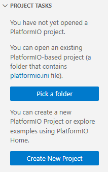
-
PIO Homeが開くので、Quick AccessからNew Projectを選択します。
-
Project Wizardが開くので各項目を入力します。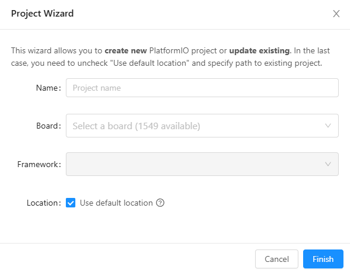
Name- プロジェクトの名前を入力します。
- 半角文字で構成してください。
Board- 使用するボードを選択します。
ST Nucleo F446REやST Nucleo F303K8、Arduino Unoなどがあります。- 使用するボードやマイコンに合わせて選択してください。
Framework- 使用する言語環境のようなものです。
Arduino UnoであればArduinoを、STMマイコン系であればMbedを選択することが多いです。
Location- プロジェクトの保存場所を指定します。
Use default locationのチェックを外し、フォルダーを選択します。- プロジェクトへのPATHに日本語などの全角文字が含まれないようにしてください。
-
入力が終わったら
Finishを押します。 プロジェクトが作成されるのを待ちます。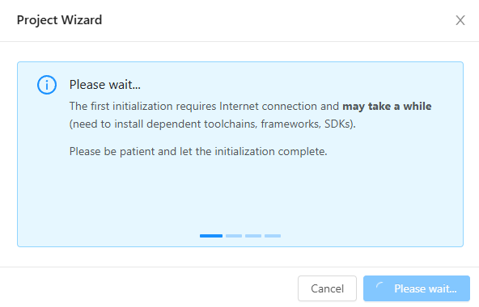
プロジェクトファイルの初期設定
-
プロジェクトの作成が終わったら
platformio.iniが開きます。- 開かない場合は、蜂マークから
Pick a folderを押してプロジェクトフォルダーを選択して開きます。
- 開かない場合は、蜂マークから
-
作成されたファイルを編集します。
; PlatformIO Project Configuration File ; ; Build options: build flags, source filter ; Upload options: custom upload port, speed and extra flags ; Library options: dependencies, extra library storages ; Advanced options: extra scripting ; ; Please visit documentation for the other options and examples ; https://docs.platformio.org/page/projectconf.html [env:nucleo_f446re] platform = ststm32 board = nucleo_f446re framework = mbed [platformio] build_cache_dir = ./.cache
このプロジェクトの更新の表示が終わるまで待ちましょう。
プロジェクトファイルの構成
-
次の構成になっています。
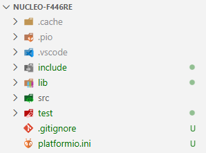
-
主に使用するフォルダは
libとsrcです。 -
lib- ライブラリ、ヘッダファイルを管理するフォルダです。
- 使用するライブラリをこのフォルダ内にコピーします。
-
src- ソースコードを管理するフォルダです。
ビルドとアップロード
コードを作成したら書き込むコードを作成します。
コードだけを作成する場合はBuild、書き込みまで行う場合はUploadをします。
右上の三角からBuildまたはUploadを選択します。

成功した場合は[SUCCESS]と表示されます。
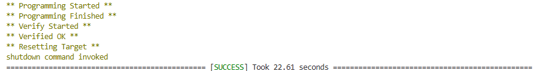
失敗した場合は[FAILED]と表示されます。
失敗した場合はエラーメッセージも出力されます。
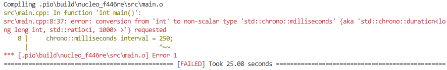
mbed
主にPlatformIOでFrameworkとして使用する場合の説明をします。
使用する場合はmbed.hをインクルードする必要があります。
ソースコードは.cppである必要があります。
main.cppの雛形を示します。
#include "mbed.h"
using namespace std;
using namespace mbed;
int main(void){
while(1){
}
return 0;
}
GPIO
ディジタル出力
ディジタル入力
Timer
PWM出力
Analog
アナログ入力
Thread
待ち時間
通信
受信側(lib)
ディジタル出力
DigitalOut
ディジタル出力をする場合は、DigitalOutクラスを使用します。
コンストラクタ
コンストラクタはDigitalOut(PinName pin)、DigitalOut(PinName pin, int value)で定義されています。
pin- 使用するピンを指定します。
value- ピンの初期値を指定します。
0、1で指定できます。
DigitalOut led2(PA_5);
led2というインスタンスを宣言しています。ピンはPA5を指定しています。
DigitalOut led2(PA_5, 1);
void write(int value)
ピンの出力を0、または、1に指定します。出力は論理値になります。
0はLOWに、1はHIGHに指定します。
led2.write(1);
int read(void)
ピンの出力設定を0、または、1を返します。
int pin_state = led2.read();
サンプルプログラム
PA5を250ms間隔で出力を反転させるプログラムです。
NUCLEO-F446REで動作確認しました。評価ボード上のLD2が250ms間隔で点滅します。
#include "mbed.h"
using namespace std;
using namespace mbed;
int main(void){
DigitalOut led2(PA_5, 0);
chrono::milliseconds blinking_interval = 250ms;
while(1){
led2.write(!led2.read());
ThisThread::sleep_for(blinking_interval);
}
return 0;
}
LD2が点滅する理由を説明します。
評価ボードの回路図

回路図では、LD2はSB21、SB42を通りPA5に接続されています。評価ボードのSB21とSB42には\(\mathrm{0[\Omega]}\)の抵抗が実装されています。LEDが点灯する電流は\(\mathrm{約5[mA]～20[mA]}\)と言われています。
この回路では、抵抗が\(\mathrm{510[\Omega]}\)で、F446REのGPIO電圧が\(\mathrm{3.3[V]}\)なので、電流は\(\mathrm{約6.47[mA]}\)となり、LEDが点灯します。
STM32F446RET6のGPIOピンの電流は\(\mathrm{25[mA]}\)(最大定格)未満にする必要がありますが、\(\mathrm{約6.47[mA]}\)なので問題はありません。
他のメソッド(使用したことがない)
int is_connected(void)
- NUCLEO-F446RE
- USB A to miniB ケーブル
ディジタル入力
DigitalIn
ディジタル入力をする場合は、DigitalInクラスを使用します。
コンストラクタ
コンストラクタはDigitalIn(PinName pin)、DigitalIn(PinName pin, PinMode mode)で定義されています。
pin- 使用するピンを指定します。
mode- ピンの初期モードを指定します。
PullUp、PullDown、PullNone、OpenDrainで指定できます。
DigitalIn button1(PC_13);
button1というインスタンスを宣言しています。ピンはPC13を指定しています。
DigitalIn button1(PC_13, PullUp);
int read(void)
ピンの入力を読み取り、0、または、1を返します。
int pin_state = button1.read();
void mode(PinMode pull)
入力ピンのモードを指定します。
PullUp- 内部プルアップ抵抗を使用する。
PullDown- 内部プルダウン抵抗を使用する。
PullNone- 内部プルアップ抵抗、内部プルダウン抵抗を使用しない。
- 入力を不定にしない場合は、外部にプルアップ抵抗、または、プルダウン抵抗を付ける必要があります。
OpenDrain- よく分かりません。
button1.mode(PullDown);
サンプルプログラム
PA5をPC13の入力値を出力に設定するプログラムです。
NUCLEO-F446REで動作確認しました。評価ボード上のLD2が評価ボード上のB1(青のプッシュスイッチ)を押していると消灯し、押していないと点灯します。
#include "mbed.h"
using namespace std;
using namespace mbed;
int main(void){
DigitalOut led2(PA_5, 0);
DigitalIn button1(PC_13, PullNone);
while(1){
led2.write(button1.read());
}
return 0;
}
LD2がB1によって点灯・消灯する理由を説明します。
評価ボードの回路図

回路図では、B1はSB17を通りPC13に接続されています。評価ボードのSB17には\(\mathrm{0[\Omega]}\)の抵抗が実装されています。
B1が押されていない間は、VDD-R30-C15-R29-GNDの回路になっています。VDDは直流なのでC15は開放扱いとなり、PC13の電位はVDDの\(\mathrm{3.3[V]}\)になります。そのため、HIGHになり、LD2が点灯します。
B1が押されている間は、VDD-R30-(0||C15-R29)-GNDの回路になっています。C15を開放扱いとすると、VDD-R30-GNDの回路となり、PC13の電位はGNDの\(\mathrm{0[V]}\)になります。そのため、LOWになり、LD2が消灯します。
この回路では、抵抗が\(\mathrm{4.7k[\Omega]}\)で、VDDが\(\mathrm{3.3[V]}\)なので、電流は\(\mathrm{約0.70[mA]}\)となります。PC13は\(\mathrm{3[mA]}\)未満にする必要がありますが、\(\mathrm{約0.70[mA]}\)なので問題はありません。
他のメソッド(使用したことがない)
int is_connected(void)
- NUCLEO-F446RE
- USB A to miniB ケーブル
PWM出力
PwmOut
PWM出力をする場合は、PwmOutクラスを使用します。
PWMはどういうものかこのページで簡単に説明しています。
コンストラクタ
コンストラクタはPwmOut(PinName pin)で定義されています。
pin- 使用するピンを指定します。
PWM出力に対応しているピンを指定する必要があります。- ピンは
Timerのチャンネルが被らないように設定する必要があります。 mbedの使用するボードのページにあるMorpho headersを確認し、ピンを指定します。NUCLEO-F446REの場合はこのページです。PWM1/1のPWM1はTimer1であることを表し、/1はChannel1であることを表しています。
PwmOut led2(PA_5);
led2というインスタンスを宣言しています。ピンはPA5を指定しています。PA5はTimer2のChannel1を使用しています。
void write(float value)
デューティー比を0.0f(0%)~1.0f(100%)に指定します。範囲外の値は0.0f、または、1.0fになります。
led2.write(1.0f);
led2.write(0.3f);
float read(void)
デューティー比の出力設定を0.0f(0%)~1.0f(100%)で返します。write()で指定した値と完全に一致しない場合があります。
float pin_duty = led2.read();
void period(float seconds)
PWMの周期の秒数を指定します。分解能はマイクロ秒単位でこれより小さい周期は0に設定されます。
void period_ms(int ms)
PWMの周期をミリ秒単位で指定します。
void period_us(int us)
PWMの周期をマイクロ秒単位で指定します。
サンプルプログラム
PWMのデューティー比がだんだん大きくなり、だんだん小さくなるプログラムです。
NUCLEO-F446REで動作確認しました。評価ボード上のLD2がやさしく点滅します。
#include "mbed.h"
using namespace std;
using namespace mbed;
int main(void){
PwmOut led2(PA_5);
led2.period_ms(1);
float i = 0.0f, div, div_abs = 0.01f;
div = div_abs;
while(1){
led2.write(i);
i+=div;
if(i > 1.0f){
i = 1.0f;
div = -div_abs;
}else if(i < 0.0f){
i = 0.0f;
div = div_abs;
}
ThisThread::sleep_for(10ms);
}
return 0;
}
周期が\(\mathrm{1[ms]}\)のPWMを出力します。
他のメソッド(使用したことがない)
int read_period_us(void)
PWMの周期設定を返します。マイクロ秒単位の周期が返されます。
void pulsewidth(float seconds)
PWMのパルス幅を秒数で指定します。
void pulsewidth_ms(int ms)
PWMのパルス幅をミリ秒単位で指定します。
void pulsewidth_us(int us)
PWMのパルス幅をマイクロ秒単位で指定します。
int read_pulsewidth_us()
PWMのパルス幅設定を返します。マイクロ秒単位の秒数が返されます。
void suspend()
PWMの動作を一時停止します。停止中は他の呼び出しは動作しません。
void resume()
PWMの動作を再開します。suspend()で停止する前の状態に復元します。
- NUCLEO-F446RE
- USB A to miniB ケーブル
アナログ入力
AnalogIn
アナログ入力をする場合は、AnalogInクラスを使用します。
コンストラクタ
コンストラクタはAnalogIn(PinName pin, float vref = MBED_CONF_TARGET_DEFAULT_ADC_VREF)で定義されています。
pin- 使用するピンを指定します。
- アナログ入力には
ADCを使用するため、ADCに対応しているピンを指定する必要があります。
vref- 基準電圧を指定します。
- よく分かりませんでした。
- 指定しない場合は初期値として
MBED_CONF_TARGET_DEFAULT_ADC_VREFが指定されます。
AnalogIn var_r1(PA_0);
var_r1というインスタンスを宣言しています。ピンはPA_0を指定しています。
float read(void)
ピンの入力電圧を読み取り、0.0f(0%)~1.0f(100%)の値を返します。
float pin_value = var_r1.read();
unsigned short read_u16(void)
ピンの入力電圧を読み取り、0x0000(0%)~0xffff(100%)の値を返します。
入力電圧を16bitに正規化して返します。
uint16_t pin_value = var_r1.read_u16();
サンプルプログラム
PA5をPA0の入力値を出力に設定するプログラムです。
NUCLEO-F446REで動作確認しました。評価ボード上のLD2が外部の半固定抵抗の値によって明るさが変化します。次の回路で動作確認を行いました。

#include "mbed.h"
using namespace std;
using namespace mbed;
int main(void){
AnalogIn var_r1(PA_0);
PwmOut led2(PA_5);
led2.period_ms(1);
while(1){
led2.write(var_r1.read());
}
return 0;
}
半固定抵抗のつまみを左から右に回すとLEDが明るくなり、右から左に回すとLEDが暗くなります。
半固定抵抗はこのような記号で表されます。

この状態では3.3[V]-R1-R2-GNDの直列回路になります。分圧されるので中間の電圧が入力電圧となり、中途半端な明るさになります。
左に回しきったときは次の状態になります。
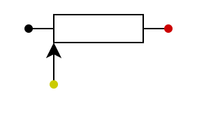
この状態では3.3[V]-R-GNDの回路になり、入力電圧が\(\mathrm{0[V]}\)になるので、消灯(0%)になります。
右に回しきったときは次の状態になります。
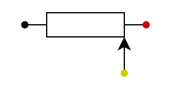
この状態では、入力電圧が\(\mathrm{3.3[V]}\)になるので、点灯(100%)になります。
他のメソッド(使用したことがない)
float read_voltage(void)
void set_reference_voltage(float vref)
float get_reference_voltage()
- NUCLEO-F446RE
- USB A to miniB ケーブル
- ブレッドボード
- 半固定抵抗 10[kΩ]
- ジャンパ線
ThisThread
待ち時間の作成
待ち時間(遅延)を作成する場合は、名前空間ThisThreadにある関数を使用します。
void sleep_for(Kernel::Clock::duration_u32 rel_time)
引数に待ち時間を渡します。Kernel::Clock::duration_u32はchrono時間と同じみたいです。
数値をそのまま渡す場合は、整数値に単位をつけて渡します。
| 名前 | 単位 | 例 |
|---|---|---|
| 時間 | h | 1h |
| 分 | min | 1min |
| 秒 | s | 1s |
| ミリ秒 | ms | 1ms |
| マイクロ秒 | us | 1us |
| ナノ秒 | ns | 1ns |
変数として渡す場合は、変数はそれぞれの型で宣言します。
chrono::hours h_interval = 1h;
chrono::minutes m_interval = 2min;
chrono::seconds s_interval = 10s;
chrono::milliseconds ms_interval = 250ms;
chrono::microseconds us_interval = 10us;
chrono::nanoseconds ns_interval = 100ns;
受信側ライブラリの使い方
ライブラリの場所
GitHub/2025-B/receiveControllerのmainブランチ、receiveF446RE/lib/rxfepにあります。使用する場合はrxfepフォルダごとダウンロードして使用してください。
使用方法(DUALSHOCK4の場合)
ページの下にサンプルプログラムを紹介しています。
include & using
-
platformioのプロジェクトのlibフォルダにrxfepをコピーしてください。 -
使用するファイルでヘッダファイルをインクルードし、名前空間の設定を行います。
#include "rxDualshock4.hpp" using namespace snct; -
using namespace snct;を行わない場合は、使用する際にsnct::を先頭に付け加えてください。
変数などの宣言
-
使用するためには次のものが必要になります。
- データを格納する構造体
UARTを使用するためのUnbufferedSerialのインスタンス- 使用したいコントローラー用のインスタンス
struct RxDualshock4::DS4_struct data; mbed::UnbufferedSerial fep(PinName::PC_10, PinName::PC_11, 38400); // PC_10はUART3_TX、PC_11はUART3_RX、38400はbaudrate RxDualshock4 ps4(fep,&data,RxController::GET_TYPE::polling);
RxDualshock4の引数
ps4(fep, &data,RxController::GET_TYPE::polling);では3つの引数があります。fep：UnbufferedSerialのインスタンスdata：構造体のポインタRxController::GET_TYPE::polling：受信方法の設定polling：ポーリング処理(データが来るまで一定期間待機する)interrupt：割り込み受信
受信する
// GET_TYPE::pollingの場合
if(ps4.getDS4()){
// 受信成功時の処理
}else{
// 受信失敗時の処理
}
// GET_TYPE::interruptの場合
if(ps4.getDS4_IT()){
// 受信成功時の処理
}else{
// 受信失敗時の処理
}
受信したデータの使用方法
led.write(data.CIRCLE);
data.《ほしいデータ名》でアクセスします。
uint8_t：LX、LY、RX、RY、L2、R2
bool：TRIANGLE、CIRCLE、CROSS、SQUARE、UP、RIGHT、DOWN、LEFT、L1、L3、R1、R3、SHARE、OPTIONS、PS、TOUCHPAD
使用する関数の引数と戻り値(DUALSHOCK4の場合)
コンストラクタ
RxDualshock4(mbed::UnbufferedSerial& unbuffered_serial_obj, struct RxDualshock4::DS4_struct *struct_p, RxController::GET_TYPE type);unbuffered_serial_obj：UnbufferedSerialのインスタンス*struct_p：構造体のポインタtype：受信方法を指定します。デフォルトでは割り込み受信になります。
- グローバルで宣言することが多いです。
getDS4()
- ポーリング受信の場合に使用します。
- 引数はありません。
- 戻り値は受信成功時は
true、失敗時はfalseが返ります。
getDS4_IT()
- 割り込み受信の場合に使用します。
- 引数はありません。
- 戻り値は受信成功時は
true、失敗時はfalseが返ります。
その他設定用関数の引数と戻り値(DUALSHOCK4の場合)
基本的に使用しません。
setHeader()
- 引数なしの場合
- ヘッダー符号をデフォルトの
0xafに設定します。
- ヘッダー符号をデフォルトの
- 引数
uint8_t headerheaderをヘッダー符号に設定します。
- 戻り値
- 設定したヘッダー符号を返します。
setFooter()
- 引数なしの場合
- フッター符号をデフォルトの
0xedに設定します。
- フッター符号をデフォルトの
- 引数
uint8_t footerfooterをフッター符号に設定します。
- 戻り値
- 設定したフッター符号を返します。
setTimeout()
- ポーリング受信の場合に使用します。
- 引数なしの場合
- タイムアウトの時間をデフォルトの
15msに設定します。
- タイムアウトの時間をデフォルトの
- 引数
chrono::milliseconds timetimeをタイムアウトの時間に設定します。
- 戻り値
- 設定したタイムアウトの時間を返します。
setRetry()
- ポーリング受信の場合に使用します。
- 引数なしの場合
- リトライ回数をデフォルトの
16に設定します。
- リトライ回数をデフォルトの
- 引数
uint8_t retryretryをリトライ回数に設定します。
- 戻り値
- 設定したリトライ回数を返します。
サンプルプログラム
使用しているものです。DUALSHOCK4用のファイルとコントローラー共通のファイルが必要になります。
lib/rxfeprxController.cpprxController.hpprxDualshock4.cpprxDualshock4.hpp
STM32F446RET6
#include <mbed.h>
#include "rxDualshock4.hpp" // ヘッダファイルをインクルードします。
#define DBG_M
// using namespace snct;をしていないからsnct::をつけます。
struct snct::RxDualshock4::DS4_struct data;
// UnbufferedSerialのインスタンスを作成
mbed::UnbufferedSerial fep(PinName::PC_10, PinName::PC_11, 38400);
// RxDualshock4のインスタンスを作成
snct::RxDualshock4 ps4(fep,&data,snct::RxController::GET_TYPE::interrupt);
mbed::PwmOut em_led(PB_15); // 緊急停止sw用のチェックLEDのインスタンス
mbed::PwmOut fep_led(PB_14); // 受信成功失敗用のチェックLEDのインスタンス
mbed::DigitalIn em_sw(PA_4); // 緊急停止sw用のインスタンス
constexpr uint8_t FAIL_MAX = 3; // 受信失敗の上限値
uint8_t fail_count = FAIL_MAX * 2; // 受信失敗カウンタ
bool em_sw_status = 0; // 緊急停止swの状態
bool fep_status = 0; // 受信の状態
int main(void){
em_led.period_us(83); // LEDの設定
em_led.write(0);
fep_led.period_us(83);
fep_led.write(0);
while(true){ // main loop
#ifdef DBG_M
printf("%d ", fail_count);
#endif
em_sw_status = em_sw.read();
if(!em_sw_status){
fep_status = ps4.getDS4_IT(); // 割り込み受信
if(fep_status){
fail_count = 0;
#ifdef DBG_M // 各データを出力
char buf[64] = {0};
sprintf(buf,
"LX:%3d LY:%3d RX:%3d RY:%3d L2:%3d R2:%3d Pressed Button: ",
data.LX, data.LY, data.RX, data.RY, data.L2, data.R2
);
printf(buf);
if(data.TRIANGLE) printf("TRIANGLE ");
if(data.CIRCLE) printf("CIRCLE ");
if(data.CROSS) printf("CROSS ");
if(data.SQUARE) printf("SQUARE ");
if(data.UP) printf("UP ");
if(data.RIGHT) printf("RIGHT ");
if(data.DOWN) printf("DOWN ");
if(data.LEFT) printf("LEFT ");
if(data.L1) printf("L1 ");
if(data.L3) printf("L3 ");
if(data.R1) printf("R1 ");
if(data.R3) printf("R3 ");
if(data.SHARE) printf("SHARE ");
if(data.OPTIONS) printf("OPTIONS ");
if(data.PS) printf("PS ");
if(data.TOUCHPAD) printf("TOUCHPAD ");
#endif
}else{
fail_count++;
if(fail_count > FAIL_MAX + 1){
fail_count--;
}
#ifdef DBG_M
printf("fail ");
#endif
}
}else{
#ifdef DBG_M
printf("em_sw_pushed ");
#endif
}
fep_led.write(!fep_status); // チェックLEDに出力
em_led.write(em_sw_status);
#ifdef DBG_M
printf("\n");
#endif
}
}
PlatformIOの導入
2025Team_BはKeil Studioを使用した制御プログラムの作成を辞め、他の開発環境への移行を考えている。Mbedのサポート終了が宣言されたからである。'記事'
PlatformIOはArduinoIDEでの書き方やMbed OSでの書き方などいろいろな書き方ができる。
コンテンツ一覧
Platform IOを入れる
そしてこれはVSCodeの拡張機能なので比較的導入が簡単なものである。
この拡張機能を使用して試しにコードを書き込むまでの記録。
学内LANでは極力ダウンロードなどはしないようにしよう
学内LANで
PlatformIOのセッティングを行うためにはVSCode自体のプロキシ設定が必要になる。
Ctrl + ,で設定を開き、設定の検索バーでproxyと入力。Http: Proxy(すべてのプロファイルに適用)を探し、プロキシサーバーを入力する欄に学内LANのプロキシサーバー(http://サーバーアドレス:ポート番号)を入力し、保存し終わったらVSCodeの再起動を行う。
VSCodeで拡張機能のマーケットプレイスで、PlatformIO IDEをインストールする。platformio.platformio-ideこれを検索バーに入力するか、platformとか検索する。'Marketplace'
インストール中にPlatformIO: Can not find working Python 3.6+ Interpreter. Please install the latest Python 3 and restart VSCodeこんな表示がでてくるかもしれない。これはPython 3.6以上が見つかりませんって言われているだけ。Pythonをインストールしていない人はInstall Pythonを押して'site'からWindows用をダウンロードする。もうインストールしてある人はI have Pythonてきなところを押せばいいと思われ。僕はインストールしてなかったからインストールする。
追記：
PlatformIOはPython3.11以下で動作するみたい
siteからpythonをインストールする場合はPython Releases for Windowsの下の方にあるPython 3.11.9 - April 2, 2024などをダウンロードしてインストールしよう。
Pythonのインストーラーをダウンロードしたら、Pythonのインストーラーを実行。下のチェックボックス欄のAdd Python.exe to PATHにチェックを入れる。Use admin privileges when installing py.exeのチェックは管理者権限ですべてのユーザーにインストールするみたいな項目だから、チェックしてなくて問題ない。チェックが終わったらInstall Nowを押してインストールする。
Setup was SuccessfulがでたらCloseを押してもよいけど、Disable path length limitっていう項目が残っている。これはパスの長さの制限をなくしますか？っていう項目だから押しておけば今後何も考えなくていい。押さなくても別に問題はないかも。(僕は押した)
そしたらVSCodeを再起動してほかのインストールが終わるのを待つ。
参考
FrameworkでMbedOSを選択したとき
基本的なことはKeil Studioと同じ。ただし、MbedOS6であることに注意。(おそらく普段はMbedOS2を使用していると思われる)
コンテンツ一覧
名前空間mbed
mbed::printf(...)
- シリアル通信で文字列などを送信する関数
- デフォルトでは
PCとボーレート9600[bps]で通信を行う stdio.hのprintf()である
printf("HelloWorld.\n");
mbed::DigitalOutクラス
mbed::DigitalOut::(pin)
- ディジタル出力を行うクラス
- 使用する
GPIOピンを指定する - 引数
pin
// PA_0 を出力ピンとしてインスタンスを作成
DigitalOut led(PA_0);
mbed::DigitalOut::write(value)
- ディジタル出力を行う関数
- 引数
value(1/0)
// ledのピンを1(HIGH)に指定
led.write(1);
mbed::DigitalOut::read(void)
- 現在のディジタル値を取得する関数
- 引数
- なし
- 戻り値
- ディジタル値 (
1/0)
- ディジタル値 (
// ledの値をled_valueに代入
bool led_value = led.read();
mbed::DigitalInクラス
mbed::DigitalIn::(pin)
- ディジタル入力を行うクラス
- 引数
pin
// PA_1 を入力ピンとしてインスタンスを作成
DigitalIn sw(PA_1);
mbed::DigitalIn::read(void)
- ディジタル値を取得する関数
- 引数
- なし
- 戻り値
- ディジタル値 (
1/0)
- ディジタル値 (
// swの値を変数sw_valueに代入
bool sw_value = sw.read();
mbed::PwmOutクラス
mbed::PwmOut::(pin)
PWM波形の出力を行うクラス- 引数
pin
// PB_0 をPWM出力ピンとしてインスタンスを作成
PWMOut moter(PB_0);
mbed::PwmOut::period_us(time)
PWMの周期を設定する関数- 引数
time- 単位は
[us]
// moterのPWM周期を83[us]に設定
moter.period(83);
mbed::PwmOut::write(value)
PWM波形を出力する関数- 引数
value- 範囲は
0~1(少数)
- 範囲は
// Duty比25％に指定
moter.write(0.25);
mbed::AnalogInクラス
mbed::AnalogIn::(pin)
- アナログ入力を行うクラス
- 引数
pin
// PA_4 をアナログ入力ピンとしてインスタンスを作成
AnalogIn variable_resister(PA_4);
mbed::AnalogIn::read(void)
AD値を取得する関数- 戻り値
AD値- 範囲は
0~1(少数)
// variable_resisterのAD値を取得する
double variable_resister_value = variable_resister.read();
名前空間mbed::ThisThread
mbed::ThisThread::sleep_for(timems)
- 指定した時間処理を停止する関数
- 引数
timemsms
// 250[ms]間処理を停止する
sleep_for(250ms);
Lチカと変数の表示
プロジェクトの作成は省略する。FrameworkでMbedOSを選択すれば問題ない。
#include <mbed.h>
int main(void){
while(true){
printf("HelloWorld!\r\n");
ThisThread::sleep_for(500ms);
}
}
これは500msごとにHelloWorld!と出力するプログラム。OS6からSerialクラスがなくなり、PCへはそのままprintfで出力できるようになった。しかし、ボードレートは9600である。
#include <mbed.h>
DigitalOut led(PA_1);
int main(void){
int i = 0;
while(true){
led.write(i);
printf("%d\n",i);
i = !i;
ThisThread::sleep_for(500ms);
}
}
これは500msごとにLEDを点滅させその値を出力するプログラム。
#include <mbed.h>
DigitalOut led(PA_1);
DigitalIn sw(PB_0);
int main(void){
int i;
while(true){
i = sw.read();
led.write(i);
printf("%d\n",i);
}
}
これはスイッチの値をLEDに出力するプログラム。LEDがPA_1でスイッチがPB_0に接続する。
参考
PWM出力
LEDの明るさを0と1以外にする。DigitalOutではLEDは最大で点灯か消灯の2パターンしかない。ほんのり光るなどということをするためにPWM波形を出力する。
#include <mbed.h>
using namespace ThisThread;
PwmOut led(PA_1);
int main(void){
led.period_us(83);
double i;
while(true){
for(i = 0;i < 1;i+=0.01){
led.write(i);
printf("%.2f\n",i);
sleep_for(25ms);
}
for(i = 1;i > 0;i-=0.01){
led.write(i);
printf("%.2f\n",i);
sleep_for(25ms);
}
}
}
ledに周期83usのPWM波形を出力。Mbedでは0~1の間で少数でデューティー比を決める。
このプログラムではだんだん明るくなり、暗くなるを1セットとしそれを繰り返すプログラム。
参考
可変抵抗を読む
可変抵抗の値を読みPWMとして出力する。
#include <mbed.h>
using namespace ThisThread;
PwmOut led(PA_1);
AnalogIn resi(PA_0);
int main(void){
led.period_us(83);
float i;
while(true){
i = resi.read();
led.write(i);
printf("%.7f\n",i);
}
}
可変抵抗をresiで読み取りそれをledに横流しする。
以上。
printfで%fを使用できるようにする
デフォルトではprintf("%f\n"i);みたいなことはできない。少数を出力するためには設定が必要。
設定ファイルを作成する
platformIOのプロジェクトのディレクトリ(platformio.iniがある階層)にmbed_app.jsonを作成する。
{
"target_overrides":{
"*":{
"target.printf_lib":"std"
}
}
}
以上。
コントローラーのデータ受信サンプル(Mbed OS6)の使用方法(DUALSHOCK4)
筆者は作成者ではないので正確な情報ではないがある程度はあっていると思う。
技術継承資料ではMbed OS2のためOS6では使用できない。サンプルコードは存在するのでそれについて、軽く中身の紹介
使い方
- 使用したいプロジェクト内の
libフォルダなどのヘッダファイルなどを入れる場所にSerialCtrl.h,SerialCtrl.cpp,DualShock4.hをコピーする - 使用したいソースファイル内で
SerialCtrl.hをincludeする#include "SerialCtrl.h"
- 名前空間
NITSCを使用するように設定するusing namespace NITSC
mbedのUnbufferedSerialクラスのインスタンスを作成するfepからUARTを用いてデータを受信するため作成する- 引数は
UARTのTX,RX,baudrateの順で渡す
SerialCtrlクラスのインスタンスを作成する- 引数はさきほど作成した
UnbufferedSerialのインスタンスを渡す
- 引数はさきほど作成した
メソッド・コンストラクタ(クラス内で宣言されている関数)
ここでは使用できる関数(public)のみ紹介
SerialCtrl()(コンストラクタ)
- インスタンスを作成する際に呼び出す特別なメソッド
- 引数は
mbedのUnbufferedSerialクラスのインスタンスの参照
tryReceive()
- 受信を行うメソッド
- 受信に成功した場合は
true,そうでない場合はfalseが返ってくる
getData()
- 受信したデータを
PlatformIOで書き込めませんでした記録
/.pio/build/nucleo_f446re/stm32f446xe.ld.link_script.ld: Invalid argument
collect2.exe: error: ld returned 1 exit status
*** [.pio\build\nucleo_f446re\firmware.elf] Error 1
このようなエラーが書き込み時、ビルド時にでてきて書き込み等ができませんでした。解決した方法をメモとして記録しておきます。
言われたこと
もしかしたらmain.cpp(メインとなるソースファイル)がプロジェクト内に複数あるかも
プロジェクトの最上位層(.pioが入っているフォルダ)で次のコマンドを実行。それにより1つしかプロジェクト内にないことが判明。
ls -laR . | grep main
-rw-r--r-- 1 [User] 197609 912 Jun 7 09:23 main.cpp
を得た。これによりこの階層以下にmainを含むファイルが1つしかないことが分かる。
参照しているライブラリ等と同じ名前のファイルが存在してるかも
#include <mbed.h>を#include "mbed.h"に変更してみてやってみたけど何も変わらなかった。
解決した方法
単純にプロジェクトを置いてる場所が悪かった。今で置いていたところはPC/d/学校のOneDrive/gitリポジトリ/に置いていて多分学校のOneDriveがとても長いし空白を含んでいるからだめだったのかと思う。
OneDriveの中にローカルリポジトリを置くなんて頭悪いことしないように！
変更後
ローカルリポジトリをユーザー直下に置いてみた。これで解決したけどwindowsの場合はユーザーフォルダがPC/Windows/ユーザー/[User Name]/みたいに日本語になっていると思われるのでこれでもだめだったらWindowsとか別のUSBとかにいれるのをおすすめする。基本的にファイル名やフォルダ名を半角英数字のみで構成することをとてもおすすめするいい経験となった。
STM32CubeIDEでの開発
基本的にNUCLEO-F446REを用いた。2024年度春休みにKeil Studioでない開発環境を使用するために使用してみた。その時の記録。
コンテンツ一覧
開発を始める前に
基本的なこと
ここではプロジェクトを作成した後にやっておくと便利なことを軽く解説。
コンテンツ一覧
変数などを表示するために
printfを使って変数の値などを見れるようにする
マイコンとパソコンとの間でUARTを用いて通信を行う。パソコン側ではTeraTermを用いてシリアルポートを監視する。
CubeIDEの設定
[プロジェクト名].ioc-Pinout & Configuration-Connectivity-USART2-ModeをAsynchronous、Configuration-Parameter Settings-Basic Parameters-Baud Rateを38400に設定。今回はUSART2を使用した。
保存しコードを作成。main.cに処理を追記。
/* USER CODE BEGIN Includes */
#include <stdio.h>
/* USER CODE END Includes */
/* USER CODE BEGIN 1 */
setbuf(stdout,NULL);
/* USER CODE END 1 */
/* USER CODE BEGIN 3 */
printf("Hello World\r\n");
HAL_Delay(250);
}
/* USER CODE END 3 */
/* USER CODE BEGIN 4 */
int _write(int file,char *ptr,int len){
HAL_UART_Transmit(&huart2, (uint8_t *)ptr, len, 10);
return len;
}
/* USER CODE END 4 */
TeraTermの設定
TeraTermを開いてファイル-新しい接続-シリアル-COM◯: STMicroelectronics STLink Virtual COM Port (COM◯)-OKでマイコンと接続する。設定-シリアルポート-スピードをCubeIDE側で設定したBaud Rateを入力。ここでは38400と設定。現在の接続を再設定で設定を完了させる。
参考
変数などを簡単に表示するために
'変数などを表示するために'でprintfする方法を紹介したが、いちいちint _writeとか書くのがめんどくさくなったので処理をまとめた。
[プロジェクト名].ioc-Pinout & Configuration-Connectivity-USART2-ModeをAsynchronous、Configuration-Parameter Settings-Basic Parameters-Baud Rateを38400に設定。今回はUSART2を使用した。
保存しコードを作成。main.cに処理を追記。
/* USER CODE BEGIN Includes */
#include <stdio.h>
#include "STprintf.h"
/* USER CODE END Includes */
/* USER CODE BEGIN 2 */
STprintf(&huart2);
uint8_t Out[8] = {0};
/* USER CODE END 2 */
/* USER CODE BEGIN 3 */
printf("Hello World\r\n");
HAL_Delay(250);
}
/* USER CODE END 3 */
STprintf関数の引数にUARTのポインタを渡すだけでprintfが使えるようになる。
TeraTermの設定
TeraTermを開いてファイル-新しい接続-シリアル-COM◯: STMicroelectronics STLink Virtual COM Port (COM◯)-OKでマイコンと接続する。設定-シリアルポート-スピードをCubeIDE側で設定したBaud Rateを入力。ここでは38400と設定。現在の接続を再設定で設定を完了させる。
参考
名前を楽する(lib)
GPIOAとかGPIO_PIN_1とかTIM_Channel_3とか書くのがめんどくなったので楽にした。
| もともと | いま |
|---|---|
| GPIO_PIN_0 | P0 |
| 中略 | 中略 |
| GPIO_PIN_15 | P15 |
| GPIO_PIN_ALL | Pall |
| GPIO_PIN_0 | GPIO_Pin_0 |
| 中略 | 中略 |
| GPIO_PIN_15 | GPIO_Pin_15 |
| GPIO_PIN_ALL | GPIO_Pin_ALL |
| GPIOA | PA |
| 中略 | 中略 |
| GPIOH | PH |
| TIM_CHANNEL_1 | TIMCH_1 |
| 中略 | 中略 |
| TIM_CHANNEL_4 | TIMCH_4 |
| TIM_CHANNWL_ALL | TIMCH_ALL |
バイナリファイル(.bin)の生成
エクスプローラーなどからマイコンに直接書き込めるようにbinファイルを生成する
CubeIDEではbinファイルは実行時やデバッグ時に自動で生成され、実行時、デバッグ時毎に上書き保存される。設定を変更するだけで生成されるようになる。
[プロジェクト名]を右クリック、プロパティ-C/C++ ビルド-設定-ツール設定-MCU/MPU Post build outputsのConvert to binary fileの項目にチェックを入れ、適用して閉じる。
binファイルの他にもHEXファイルやSRECファイルなどの他のファイル形式のファイルも設定すれば、生成できる。
binファイルは生成されるとプロジェクトの中のDebugフォルダに[プロジェクト名].binという名前で生成される。
参考
入出力
ディジタルやアナログの入出力に関して軽く解説。
コンテンツ一覧
ディジタル入出力
LEDを点灯させたり、プッシュスイッチの値を読み込んだりする
[プロジェクト名].ioc-Pinout & Configuration-Pinout viewから使いたいピンを選択する。今回はPA_1をGPIO_Input、PA_0をGPIO_Outputに設定した。ピンを選ぶときには使用するマイコンボードのMbedのページ(ここでは'NUCLEO-F446RE')のMorpho headersを見ながら選ぶといいかもしれない。
保存しコードを作成。main.cに処理を追記。
/* USER CODE BEGIN 2 */
int psw1;
/* USER CODE END 2 */
/* USER CODE BEGIN 3 */
psw1 = HAL_GPIO_ReadPin(GPIOA, GPIO_PIN_1); // ディジタル入力
HAL_GPIO_WritePin(GPIOA, GPIO_PIN_0, psw1); // ディジタル出力
}
/* USER CODE END 3 */
使用する回路によって動作は異なるがプルアップ抵抗を用いたプッシュスイッチの回路であれば、スイッチを押すとLEDは消灯し、離すとLEDは点灯するだろう。
参考
タイマー割り込みによるLチカ
HAL_Delay()を使わないでLチカをする
今までLチカは以下のようなコードでしていた。
HAL_GPIO_TogglePin(GPIOA,GPIO_PIN_0);
HAL_Delay(1000);
これは毎秒Lチカするプログラムである。このコードでは次にLEDの状態を変えるまで処理をすべて止めている。そのため、他の処理をしようとしてもできなかった。そんなときにタイマー割り込みを使用すれば他の処理を止めることなく、一定の周期である処理を実行することができる。
[プロジェクト名].ioc-Pinout & Configuration-Timers-TIM2-Mode-Clock SourceをInternal Clock、Configuration-Parameter Settings-Counter Settings-Prescalerを15、Counter Periodを999999に、Configuration-NVIC Setting-TIM2 global interruptをEnableに設定。今回はTIM2を使用した。
/* USER CODE BEGIN 2 */
HAL_TIM_Base_Start_IT(&htim2);
/* USER CODE END 2 */
/* USER CODE BEGIN 4 */
void HAL_TIM_PeriodElapsedCallback(TIM_HandleTypeDef* htim){
HAL_GPIO_TogglePin(GPIOxA, GPIO_Pin_0);
}
/* USER CODE END 4 */
HAL_TIM_PeriodElapsedCallback関数は割り込みをした時に実行される関数であるため、そこにLチカのコードを書く。
割り込み周期は設定したPrescalerとCounter Period、内部クロック周波数で決まる。内部クロック周波数はデフォルトでは16MHzだが変更したいまたは。確認したい場合はiocファイルのClock Configuration-APB1 Timer clocks(MHz)で確認する(たぶん)。割り込み周期は以下の式で求められる。
$$f = \frac{(内部クロック周波数)}{(Prescaler + 1) \times (Counter \space Period + 1)}$$
また、周期は周波数の逆数なので周期から求めると、
$$ T = \frac{1}{f} = \frac{(Prescaler + 1) \times (Counter \space Period + 1)}{(内部クロック周波数)} $$
となる。おすすめとしてはPrescalerを15としてCounter Periodの値を変更するとわかりやすいかもしれない。
上記の例ではPrescalerが15でCounter Periodが999999なので周期は、
$$ \frac{(15 + 1)(999999 + 1)}{16 \times 10^6} = 1[s] $$
となり、毎秒Lチカするプログラムになっている。
参考
PWM出力
LEDの明るさを変更したり、モーターの回転速度を変更したりする
[プロジェクト名].ioc-Pinout & Configuration-Timers-TIM3-Mode-Channel3をPWM Generation CH3、Configuration-Parameter Settings-Counter Settings-Prescalerを834、Counter Periodを999255、PWM Generation Channel3-Output compare preloadをDisableに設定。今回はTIM3を使用した。
保存しコードを作成。main.cに処理を追記。
/* USER CODE BEGIN WHILE */
while (1)
{
HAL_TIM_PWM_Start(&htim3, TIM_CHANNEL_3);
/* USER CODE END WHILE */
/* USER CODE BEGIN 3 */
__HAL_TIM_SET_COMPARE(&htim3,TIM_CHANNEL_3,100);
}
/* USER CODE END 3 */
100がパルス幅にあたる部分であり、範囲は0~255にする。
範囲やPWM周期などはPrescalerやCounter Periodなどから求められる。式については'ここ'に記載している。Counter Periodが範囲の個数-1であるということだけは覚えていて欲しい。
参考
アナログ入力
可変抵抗の値を読み取ったり、センサの値を読み取ったりする
[プロジェクト名].ioc-Pinout & Configuration-Pinout viewから使いたいピンを選択する。今回はPA_4をADC1_IN4に設定した。ピンを選ぶときには使用するマイコンボードのMbedのページ(ここでは'NUCLEO-F446RE')のMorpho headersを見ながら選ぶといいかもしれない。
保存しコードを作成。main.cに処理を追記。
/* USER CODE BEGIN 2 */
float resi1;
/* USER CODE END 2 */
/* USER CODE BEGIN WHILE */
while (1)
{
HAL_ADC_Start(&hadc1);
/* USER CODE END WHILE */
/* USER CODE BEGIN 3 */
HAL_ADC_PollForConversion(&hadc1, 100);
resi1 = HAL_ADC_GetValue(&hadc1);
printf("%f\r\n",resi1);
HAL_Delay(250);
}
/* USER CODE END 3 */
float型をprintfするために、設定を変更する。[プロジェクト名]を右クリック、プロパティ-C/C++ ビルド-設定-ツール設定-MCU/MPU SettingsのUse float with printf from newlib-nanoの項目にチェックを入れ、適用して閉じる。
今回は可変抵抗を用いてアナログ入力値の変化を出力した。printfを使えるようにするためには、他の設定やコードが必要。'これ'を参考にした。
参考
ロータリーエンコーダを読む
エンコーダは'AMT102-V'を使用した。
エンコーダを読むことで移動距離などを計算できる。エンコーダにはA相とB相を用いて回転方向と回転量をアナログ値として読み取ることができるらしい。
Timerのエンコーダモードを使用する。使用するピンは各TimerのChannel1,2である。
[プロジェクト名].ioc-Pinout & Configuration-Timers-TIM3-Mode-Combined ChannelsをEncoder Mode、Configuration-Parameter Settings-Counter Settings-Counter Periodを8192、Encoder-Encoder ModeをEncoder Mode TI1 and TIT2に設定。今回はTIM3を使用した。
printfを使用する。
/* USER CODE BEGIN 0 */
int over;
void HAL_TIM_PeriodElapsedCallback(TIM_HandleTypeDef* htim){
if(htim->Instance == TIM3){
__HAL_TIM_CLEAR_FLAG(&htim3,TIM_IT_UPDATE);
if(__HAL_TIM_IS_TIM_COUNTING_DOWN(&htim3)){
over--;
}else{
over++;
}
}
}
/* USER CODE END 0 */
/* USER CODE BEGIN 2 */
STprintf(&huart2);
HAL_TIM_Encoder_Start(&htim3, TIMCH_ALL);
HAL_TIM_Base_Start_IT(&htim3);
int count;
over = 0;
/* USER CODE END 2 */
/* USER CODE BEGIN WHILE */
while (1)
{
// count = TIM3 -> CNT;
count = (long)(over * 8192) + (long)TIM3 -> CNT;
printf("%d\r\n",count);
HAL_Delay(100);
/* USER CODE END WHILE */
エンコーダの回転量をTIM3 -> CNTでゲットし表示する。ただ8192を上回るまたは0を下回ると8192から0にまたは0から8192に飛ぶ。
それを解決するためにオーバーフローを検知しその回数を記録しcountに反映させる。HAL_TIM_PeriodElapsedCallback関数はオーバーフローが起こった時に実行される関数であるため、そこにオーバーフローの回数を記録する。一回転が8192であるからover * 8192で増分を増やす。一回転が8192であるのはエンコーダのデータシートに記載されていて内部のディップスイッチが1~4までが全て0になっている場合、一回転は2048 * 4の8192になると書かれている。

角度を求めてみる
回転量から回転回数や基準からの角度などを求められる。((float)count / 8192) * 360で1周360°になる。ただしcountはもともとint型なので計算結果を少数にするためにfloat型にキャスト変換する。また、以下のコードで角度を0°~360°にすることで何周しても同じ角度になるようにすることができる。
while(deg > 360){
deg = deg - 360;
}
while(deg < 0){
deg = deg + 360;
}
また、スイッチが押されたらその場所を基準としてそこからの角度を表示できるようにすると良いかもしれない。するとすればoverとTIM3->CNTをそれぞれ0にする必要がある。

参考
通信
他の機器と通信する方法について簡単に解説する。主にUARTによる通信について解説する。
コントローラー側のArduinoとの通信に使用するヘッダファイルなどの中身も軽く紹介する。
コンテンツ一覧
UART通信(受信)
ArduinoなどからのデータをUARTを使用して受け取る
[プロジェクト名].ioc-Pinout & Configuration-Connectivity-USART1-ModeをAsynchronous、Configuration-Parameter Settings-Basic Parameters-Baud Rateを38400に設定。今回はUSART1を使用した。
保存しコードを作成。main.cに処理を追記。
/* USER CODE BEGIN 2 */
char getdata;
/* USER CODE END 2 */
/* Infinite loop */
/* USER CODE BEGIN WHILE */
while (1)
{
/* USER CODE END WHILE */
/* USER CODE BEGIN 3 */
if(HAL_UART_Receive(&huart1, &getdata, 1, 10) == HAL_OK){
printf("%x\r\n",getdata);
}
}
/* USER CODE END 3 */
受け取ったデータをprintfする。たとえばArduino側でスイッチの値を送るとしたらTeraTermの画面にはそのスイッチの値が表示されるだろう。
参考
UART通信(送信)
ArduinoなどにデータをUARTを使用して送る
[プロジェクト名].ioc-Pinout & Configuration-Connectivity-USART1-ModeをAsynchronous、Configuration-Parameter Settings-Basic Parameters-Baud Rateを38400に設定。今回はUSART1を使用した。
保存しコードを作成。main.cに処理を追記。
STprintf(&huart2);
uint8_t i = 0;
/* USER CODE END 2 */
/* Infinite loop */
/* USER CODE BEGIN WHILE */
while (1)
{
/* USER CODE END WHILE */
/* USER CODE BEGIN 3 */
HAL_UART_Transmit(&huart1, &i, 1, 10);
printf("%d\r\n",i);
HAL_Delay(250);
i++;
}
HAL_UART_TransmitでUARTを使用して1Byteのデータを送信する。printfでiの値を画面上に出力している。
参考
Arduinoとの通信(lib)
Keil StudioのSerialCtrlのようなライブラリの使用方法
-
UART_Arduinoライブラリの最新バージョンをダウンロード。teams等にある場合が多い。 -
ダウンロードした
ヘッダファイルをプロジェクト-Core-Incに、ソースファイルをプロジェクト-Core-Srcに移動。 -
使用したいソースファイル内等でヘッダファイルを
Includeする。 -
使用する
USARTを.iocファイルで設定しコードを生成。[プロジェクト名].ioc-Pinout & Configuration-Connectivity-USART1-ModeをAsynchronous、Configuration-Parameter Settings-Basic Parameters-Baud Rateを38400に設定。今回はUSART1を使用した。 -
使用する関数を記述。
中には
printfを使用する関数も含まれているため、printfをUART通信で使用できるようにしておく。'参考'
使用例1
// 略
/* USER CODE BEGIN Includes */
#include <stdio.h>
#include "USART_Arduino.h"
/* USER CODE END Includes */
// 中略
/* USER CODE BEGIN 1 */
setbuf(stdout,NULL);
/* USER CODE END 1 */
// 中略
/* USER CODE BEGIN 2 */
getdata DATA;
/* USER CODE END 2 */
// 中略
/* USER CODE BEGIN WHILE */
while (1)
{
/* USER CODE END WHILE */
/* USER CODE BEGIN 3 */
if(getData(&huart1,&DATA) == 0){
AllShowP(DATA);
}
}
/* USER CODE END 3 */
// 中略
/* USER CODE BEGIN 4 */
int _write(int file,char *ptr,int len){
HAL_UART_Transmit(&huart2, (uint8_t *)ptr, len, 10);
return len;
}
/* USER CODE END 4 */
// 略
上記の使用例では、printfをUSART2で使用できるようにし、ArduinoとのUART通信にUSART1を使用している。また、getdata型のDATAという名前の構造体変数を宣言し、getData関数に引数としてDATAのアドレスを渡している。
使用例2
// 略
/* USER CODE BEGIN Includes */
#include <stdio.h>
#include "USART_Arduino.h"
#include "STprintf.h"
#include "manydef.h"
/* USER CODE END Includes */
// 略
/* USER CODE BEGIN 2 */
STprintf(&huart2);
unsigned int FAFcount = 0;
/* USER CODE END 2 */
// 略
/* USER CODE BEGIN WHILE */
while (1)
{
HAL_TIM_PWM_Start(&htim3,TIMCH_3);
/* USER CODE END WHILE */
/* USER CODE BEGIN 3 */
getDataIT(&huart1);
printf("%d %d \r\n",FAF,FAFcount);
if(FAF == 1){
FAFcount = 0;
AllShow(data);
__HAL_TIM_SET_COMPARE(&htim3,TIMCH_3,data.LY);
HAL_GPIO_WritePin(GPIOxA, GPIO_Pin_0, 0);
}else{
FAFcount++;
if(FAFcount >= TIMEOUT_MAX * 10){
__HAL_TIM_SET_COMPARE(&htim3,TIMCH_3,0);
HAL_GPIO_WritePin(GPIOxA, GPIO_Pin_0, 0);
FAFcount = 0;
printf("main timeout ");
HAL_Delay(500);
}
}
}
/* USER CODE END 3 */
// 略
上記の使用例では、printfをUSART2で使用できるようにし、ArduinoとのUART通信にUSART1を使用している。あらかじめライブラリ内で宣言されている構造体dataのLYの値に合わせてLEDが点灯する。FAFとはデータを受信したかどうか記録するフラグ(変数)であり、フラグに合わせてタイムアウトの処理を行っている。タイムアウトの時間や回数などは他の処理の量によって変更した。
各関数に関して
- getData関数
- 引数に
UART_HandleTypeDef*とgetdata*をもつ。使用するUSARTの構造体変数のポインタUART_HandleTypeDef*と受信したデータを入れる構造体変数のポインタgetdata*を渡す。 getData(&huart1,DATA);- 戻り値は、先頭データが
0xafであり、構造体に受信データが代入された場合は0、先頭データが0xafでない場合は-1が返される。 - 受信にはポーリング方式を使用し、データを受信する関数。
- 引数に
- getDataIT関数
- 引数に
UART_HandleTypeDef*をもつ。使用するUSARTの構造体変数のポインタUART_HandleTypeDef*を渡す。 getDataIT(&huart1);- 使用には
Configuration-NVIC Setting-USART1 global interruptをEnableに設定する必要がある。 - 戻り値はなく、受信には割り込み使用し、データを受信する関数。
- 引数に
- AllShow関数
- 引数に
getdataをもつ。構造体変数getdataを渡す。 AllShow(data);- 戻り値はなく、構造体の中身を表示する関数。表示形式はアナログ値をもつスティックなどは整数3桁(空白埋め)で、ディジタル値をもつボタンなどは
0/1で表示する。 printf関数を使用するため、printfを使用するためのコードが必要になる。'参考'
- 引数に
- AllShowP関数
- 引数や戻り値は
AllShow関数と同じである。 - 表示形式はスティックなどは
AllShow関数と同じだが、ボタンなどはAllShow関数と異なり、押されているボタンを名前で表示する。送信側のArduinoのシリアルモニタと同じように表示される。
- 引数や戻り値は
内部で使用される各関数に関して
- RevAF関数
- 引数に
UART_HandleTypeDef*をもつ。使用するUSARTの構造体変数のポインタUART_HandleTypeDef*を渡す。 RevAF(huart);- 戻り値は、受信したデータが先頭データ
0xafの場合は0xaf、そうでない場合は0x00を、そもそも受信していない場合は0xffを返す。 - ポーリング方式の際に使用される関数。
- 引数に
- AddArray関数
- 引数に
UART_HandleTypeDef*とuint8_t*をもつ。使用するUSARTの構造体変数のポインタUART_HandleTypeDef*と受信したデータを入れる配列のポインタuint8_t*を渡す。 AddArray(huart,Rdata);- 戻り値はなく、受信データの総数になるまで受信したデータを配列に順番に代入する。
- ポーリング方式の際に使用される関数。
- 引数に
- HAL_UART_RxCpltCallback関数
- 引数に
UART_HandleTypeDef*をもつ。この関数は受信割り込みでデータを受信した時に自動的に実行される。 - 戻り値はなく、
FAFを揚げデータを受信したことを表す。また、getData関数の内部処理のようなことを行う。 - 割り込みを使用した際に使用される関数。
- 引数に
- ChSUM関数
- 引数に
uint8_t*をもつ。受信したデータが入った配列のポインタuint8_t*を渡す。 - 配列の最後のデータが終端データ
0xedであるか確認し、終端データである場合、チェックサムを行う。 - チェックサムとは、各スティックと各ボタンのデータの総和が送信側で計算された総和と一致しているか確認すること。送信側の計算結果も受信データに含まれている。
- 戻り値は、総和が一致している場合は
0xed、そうでない場合は0x00、配列の最後のデータが正しくない場合は0xffを返す。 - ポーリング方式と割り込みを使用した際のどちらでも使用される関数。
- 引数に
- AddStruct関数
- 引数に
getdata*とuint8_t*をもち、データを格納する構造体変数のポインタgetdata*と受信データが入ってる配列のポインタuint8_t*を渡す。 AddStruct(&data,AIdata);- 配列の値から構造体の各要素にデータを代入する。
- 戻り値はなく、ポーリング方式と割り込みを使用した際のどちらでも使用される関数。
- 引数に
- StructInit関数
- 引数に
getdata*をもつ。データを格納する構造体変数のポインタgetdata*を渡す。 StructInit(&data);- 構造体の各要素を初期化する。
LX,LY,RX,RYスティックは0x80に、L2,R2スティックは0x00に、各ボタンは0に初期化される。 - 戻り値はなく、ポーリング方式と割り込みを使用した際のどちらでも使用される関数。
- 引数に
CAN通信(受信)
CANとはなにか。一旦省く。
STM32 F446RET6 CAN1
iocの設定(CAN)
ioc-Pinout & Configuration-Connectivity-CAN1ActivatedにチェックParameter SettingsBit Timings ParametersPrescaler(for Time Quantum):2Time Quanta in Bit Segment 1:5 Times→Tseg1Time Quanta in Bit Segment 2:2 Times→Tseg2ReSynchronization Jump Width:1 Times→SJWBuad Rateが1000000 bit/sになっていることを確認
Prescalerを先に2にするとTseg1、Tseg2の設定で警告が出る可能性ありBaud Rateは次の式で求められる
$$ BaudRate = \frac{(内部クロック周波数)}{(Tseg1 + Tseg2 + SJW) \times Prescaler} $$
Basic PatametersAutomatic Bus-Off Management:Enable←バズOFF時再起Automatic Wake-Up Mode:Enable←バスOFF時受信で再起Automatic Retransmission:Enable←ACKが返ってこなかった場合の再送信
NVIC SettingsCAN1 RX0 interrupt:Enable←割り込み受信RX0有効化
コードの生成
iocの設定(Timer)
CANの受信判定を行うため、Timer割り込みを有効化させる
1ms周期の割り込み
Timers-TIM5Internal ClockにチェックPatameter SettingsCounter SettingsPrescaler:15Counter Period:999割り込み周期は以下の式で求められる
$$ T = \frac{(Prescaler + 1) \times (Counter \space Period + 1)}{(内部クロック周波数)} $$
NVIC SettingsTIM5 global interrupt:Enable
受信コード
/* USER CODE BEGIN PV */
uint32_t CAN_CO_ID = 0x010;
uint8_t can_rev_buffer[8] = {0};
bool can_rev_flag = 0;
uint16_t can_rev_count = 0;
int count = 0;
/* USER CODE END PV */
/* USER CODE BEGIN PFP */
void HAL_CAN_RxFifo0MsgPendingCallback(CAN_HandleTypeDef *hcan);
void HAL_TIM_PeriodElapsedCallback(TIM_HandleTypeDef *htim);
/* USER CODE END PFP */
/* USER CODE BEGIN 2 */
// コントローラー受信
HAL_CAN_Start(&hcan1);
HAL_CAN_ActivateNotification(&hcan1, CAN_IT_RX_FIFO0_MSG_PENDING);
// 1ms周期割り込み
// CAN受信確認用
HAL_TIM_Base_Start_IT(&htim5);
/* USER CODE BEGIN CAN1_Init 2 */
CAN_FilterTypeDef filter;
filter.FilterIdHigh = 0;
filter.FilterIdLow = 0;
filter.FilterMaskIdHigh = 0;
filter.FilterMaskIdLow = 0;
filter.FilterScale = CAN_FILTERSCALE_16BIT;
filter.FilterFIFOAssignment = CAN_FILTER_FIFO0;
filter.FilterBank = 0;
filter.FilterMode = CAN_FILTERMODE_IDMASK;
filter.SlaveStartFilterBank = 14;
filter.FilterActivation = ENABLE;
HAL_CAN_ConfigFilter(&hcan1, &filter);
/* USER CODE END CAN1_Init 2 */
/* USER CODE BEGIN 4 */
void HAL_CAN_RxFifo0MsgPendingCallback(CAN_HandleTypeDef *hcan){
CAN_RxHeaderTypeDef RxHeader;
uint8_t RxData[8] = {0};
if(HAL_CAN_GetRxMessage(hcan, CAN_RX_FIFO0, &RxHeader, RxData) == HAL_OK){
if(hcan == &hcan1){
if(RxHeader.StdId == CAN_CO_ID){
for(int i = 0; i < 8; i++){
can_rev_buffer[i] = RxData[i];
}
}
can_rev_count++;
}
}
}
void HAL_TIM_PeriodElapsedCallback(TIM_HandleTypeDef *htim){
if(htim == &htim5){
count++;
if(count >= 1000){ // 3msの送信間隔 1s間隔の受信確認
count = 0;
can_rev_flag = (bool)can_rev_count;
can_rev_count = 0;
}
}
}
/* USER CODE END 4 */
使用例
/* USER CODE BEGIN Includes */
#include "stdbool.h"
#include "stdint.h"
/* USER CODE END Includes */
/* USER CODE BEGIN PTD */
struct CAN_DS4_struct{
uint8_t LX, LY, RX, RY, L2, R2;
bool TRIANGLE, CIRCLE, CROSS, SQUARE, UP, RIGHT, DOWN, LEFT, L1, L3, R1, R3, SHARE, OPTIONS, PS, TOUCHPAD;
void (* f_data_init) (struct CAN_DS4_struct *_struct);
void (* f_data_apply) (struct CAN_DS4_struct *_struct, uint8_t *_data_array);
};
/* USER CODE END PTD */
/* USER CODE BEGIN PV */
uint32_t CAN_CO_ID = 0x010;
struct CAN_DS4_struct data = {0};
uint8_t can_rev_buffer[8] = {0};
bool can_rev_flag = 0;
uint16_t can_rev_count = 0;
int count = 0;
/* USER CODE END PV */
/* USER CODE BEGIN PFP */
void HAL_CAN_RxFifo0MsgPendingCallback(CAN_HandleTypeDef *hcan);
void HAL_TIM_PeriodElapsedCallback(TIM_HandleTypeDef *htim);
void can_rev_init(struct CAN_DS4_struct *_struct);
/* USER CODE END PFP */
/* USER CODE BEGIN 2 */
// コントローラー受信
HAL_CAN_Start(&hcan1);
HAL_CAN_ActivateNotification(&hcan1, CAN_IT_RX_FIFO0_MSG_PENDING);
can_rev_init(&data);
data.f_data_init(&data);
// 1ms周期割り込み
// CAN受信確認用
HAL_TIM_Base_Start_IT(&htim5);
/* USER CODE END 2 */
/* USER CODE BEGIN WHILE */
while (1)
{
data.TOUCHPAD |= !can_rev_flag;
if(can_rev_flag){
data.f_data_apply(&data,can_rev_buffer);
if(!data.TOUCHPAD){ // 非常停止SW 受信成功失敗 遠隔非常停止
stop_flag = 0;
if(data.OPTIONS){
/**
処理
**/
}
}else{
stop_flag = 1;
}
}else{
stop_flag = 1;
}
/* USER CODE END WHILE */
}
/* USER CODE BEGIN 4 */
void can_rev_data_init(struct CAN_DS4_struct *_struct){
_struct->LX = 0x00;
_struct->LY = 0x00;
_struct->RX = 0x00;
_struct->RY = 0x00;
_struct->L2 = 0x00;
_struct->R2 = 0x00;
_struct->TRIANGLE = 0;
_struct->CIRCLE = 0;
_struct->CROSS = 0;
_struct->SQUARE = 0;
_struct->UP = 0;
_struct->RIGHT = 0;
_struct->DOWN = 0;
_struct->LEFT = 0;
_struct->L1 = 0;
_struct->L3 = 0;
_struct->R1 = 0;
_struct->R3 = 0;
_struct->SHARE = false;
_struct->OPTIONS = false;
_struct->PS = false;
_struct->TOUCHPAD = true;
}
void can_rev_data_apply(struct CAN_DS4_struct *_struct, uint8_t *_data_array){
_struct->LX = _data_array[0];
_struct->LY = _data_array[1];
_struct->RX = _data_array[2];
_struct->RY = _data_array[3];
_struct->L2 = _data_array[4];
_struct->R2 = _data_array[5];
_struct->TRIANGLE = _data_array[6] & 0x01;
_struct->CIRCLE = (_data_array[6] & 0x02) >> 1;
_struct->CROSS = (_data_array[6] & 0x04) >> 2;
_struct->SQUARE = (_data_array[6] & 0x08) >> 3;
_struct->UP = (_data_array[6] & 0x10) >> 4;
_struct->RIGHT = (_data_array[6] & 0x20) >> 5;
_struct->DOWN = (_data_array[6] & 0x40) >> 6;
_struct->LEFT = (_data_array[6] & 0x80) >> 7;
_struct->L1 = _data_array[7] & 0x01;
_struct->L3 = (_data_array[7] & 0x02) >> 1;
_struct->R1 = (_data_array[7] & 0x04) >> 2;
_struct->R3 = (_data_array[7] & 0x08) >> 3;
_struct->SHARE = (_data_array[7] & 0x10) >> 4;
_struct->OPTIONS = (_data_array[7] & 0x20) >> 5;
_struct->PS = (_data_array[7] & 0x40) >> 6;
_struct->TOUCHPAD = (_data_array[7] & 0x80) >> 7;
}
void can_rev_init(struct CAN_DS4_struct *_struct){
_struct->f_data_init = can_rev_data_init;
_struct->f_data_apply = can_rev_data_apply;
}
/* USER CODE END 4 */